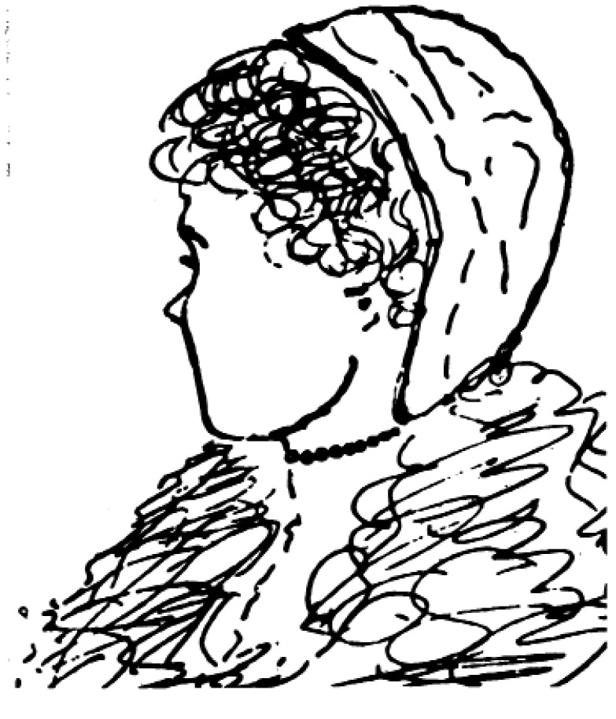
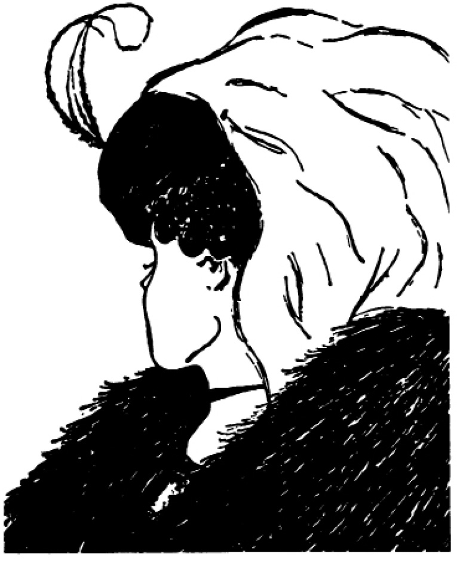
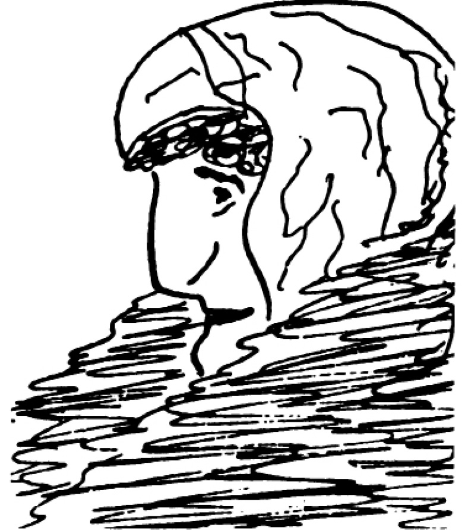
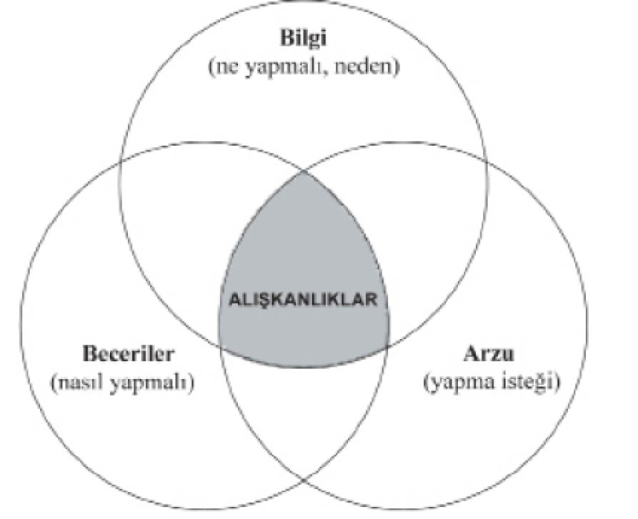
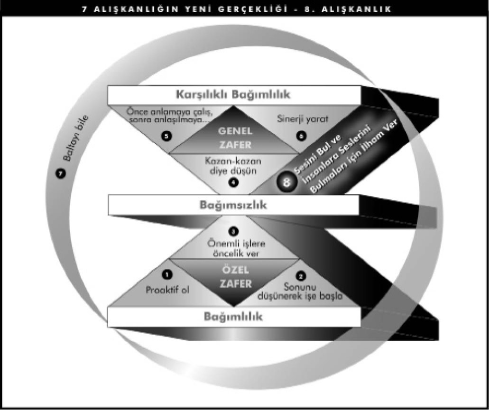

Birinci Bölüm - PARADİGMALAR VE İLKELER
İÇTEN DIŞA
Bütün bu dünyada, doğru yaşamaktan ayrı tutulabilecek gerçek bir mükemmellik yoktur.
DAVID STARR JORDAN
Yirmi beş yıldan uzun bir süre, iş, üniversite, evlilik ve aile çevrelerinden insanlarla birlikte çalıştım. Bu süre içinde dışarıdan bakıldığında inanılmayacak kadar başarılı görünen pek çok kişiyle karşılaştım. Ama onlar, içlerindeki bir açlıkla savaşıyorlardı.
Kişisel uyuma, etkili olmaya ve diğer insanlarla giderek gelişen sağlıklı ilişkiler kurmaya büyük gereksinimleri vardı.
Benimle paylaştıkları sorunların size de tanıdık gelebileceğini sanıyorum.
Mesleğimle ilgili hedefler saptadım ve olağanüstü bir başarıya ulaştım.
Ama bu, hem kişisel hem de aile yaşamıma mal oldu. Eşimi ve çocuklarımı artık tanımıyorum. Hatta kendimi tanıdığımdan, benim için gerçekten neyin önemli olduğunu bildiğimden de emin değilim.
Bu nedenle kendi kendime şu soruyu sormak zorunda kaldım: “Buna değer mi?”
Yeni bir rejime başladım... bu yıl beşinci kez. Kilomun fazla olduğunu biliyor ve değişmeyi gerçekten istiyorum. Bütün yeni bilgileri okuyor, kendim için hedefler saptıyorum. Olumlu bir bakış açısı edinebilmek için psikolojik bakımdan kendimi teşvik ediyorum. Kendi kendime bu işi başarabileceğimi söylüyorum. Ama başaramıyorum.
Birkaç hafta sonra pes ediyorum. Kendi kendime verdiğim bir sözü nedense tutamıyorum.
Etkili yönetim konusunda kurs üstüne kursa katıldım. Yanımda çalışan insanlardan çok şey bekliyorum. Onlara dostluk göstermek ve düzgün davranmak için bir hayli çaba harcıyorum. Ama bana sadık olduklarını hissetmiyorum. Günün birinde hastalanıp evde kalacak olsam, zamanın çoğunu çay-kahve içip gevezelik ederek geçireceklerini düşünüyorum. Neden onlara bağımsız ve sorumlu olmayı öğretemiyorum?
Ya da böyle olabilecek insanları bulamıyorum?
Yetişme çağındaki oğlum çok asi ve uyuşturucu kullanıyor. Hangi yolu denersem deneyeyim, beni dinlemiyor. Ne yapabilirim?
Yapılacak çok iş var. Zaman ise hiç yeterli değil. Kendimi bütün gün baskı altında ve savaş halinde hissediyorum. Her gün! Haftanın yedi günü! Zaman yönetimi seminerlerine katıldım ve altı değişik planlama sistemini denedim. Onların biraz yardımı oldu. Ama yine de istediğim gibi mutlu, verimli ve huzurlu bir yaşantım olduğunu hissetmiyorum.
Çocuklarıma çalışmanın değerini öğretmek istiyorum. Ama onların bir şey yapmalarını sağlamak için her hareketlerini denetlemem gerekiyor...
Her adımda şikâyetlerine katlanmak zorundayım. Her şeyi kendi başına yapmak daha kolay. Neden çocuklar üzerlerine düşen işleri neşeyle ve kendilerine hatırlatılmadan yapmıyorlar?
Çok işim var. Gerçekten çok. Ama bazen yaptıklarımın uzun vadede bir fark yaratacağından kuşkuya düşüyorum. Yaşamımın bir anlam taşıdığını ve bazı şeylerin benim varlığım sayesinde farklı olduğunu düşünmeyi gerçekten istiyorum.
Dostlarımın ya da akrabalarımın bir dereceye kadar başarılı olduklarını ya da itibar kazandıklarını görüyorum. Gülümsüyor ve onları heyecanla kutluyorum. Ama bu arada içimi bir kurt kemiriyor. Neden böyle hissediyorum?
Güçlü bir kişiliğim var. Hemen her karşılaşmada, sonucu kontrol edebileceğimi biliyorum. Hatta bunu çoğu zaman, istediğim çözümün bulunmasını sağlayacak biçimde başkalarını etkileyerek yapabiliyorum. Her türlü durumu inceden inceye düşünüyor ve bulgularımın genellikle herkes için gerçekten de yararlı olduğuna inanıyorum. Ama kaygılıyım. Başkalarının, benim ve düşüncelerim hakkında neler düşündüklerini her zaman merak ediyorum.
Evliliğim tatsızlaştı. Kavga ettiğimiz filan yok, sadece artık birbirimizi sevmiyoruz. Evlilik danışmanlarına gittik. Başka şeyler de denedik. Ama nedense o eski duygularımızı yeniden canlandıramıyoruz.
Bunlar derin sorunlar. Acı veren sorunlar. Anlık çözümlerle düzeltilemeyecek sorunlar!
Birkaç yıl önce eşim Sandra ve ben bu tür bir dertle uğraştık.
Oğullarımızdan biri okulda zorlanıyordu. Derslerinde pek başarılı değildi. Bırakın sınavlarda iyi not almayı, sınavda verilen talimatları bile uygulayamıyordu. Sosyal açıdan hiç olgun değildi. Çoğu zaman yakınlarını utandırıyordu. Beden yapısı ufak tefek ve sıska, hareketleri eşgüdümsüzdü. Örneğin, beysbol sopasını neredeyse top atılmadan sallamaya kalkıyordu. Diğer çocuklar onunla alay ediyorlardı.
Sandra’yla ben, ona yardımcı olabilmek için çırpınıp duruyorduk.
“Başarı” yaşamın herhangi bir alanında önemli ise, anne-baba olarak bizim için önemlinin de ötesindeydi. Bu nedenle oğlumuza karşı tutum ve davranışlarımız üzerinde çalıştık. Aynı çalışmayı onunkiler üzerinde de yaptık. Olumlu düşünme tekniklerini kullanarak ona cesaret aşılamaya çabaladık. “Haydi, oğlum! Bunu başarabilirsin!
Yapabileceğini biliyoruz! Beysbol sopasını biraz daha yukardan tut ve gözlerini toptan ayırma. Top sana yaklaşıncaya kadar sopayı sallama.” Oğlumuz biraz başarılı olduğunda, onu desteklemek için elimizden geleni yapıyorduk. “İşte bu güzel, oğlum.
Böyle devam et!”
Başkaları güldükleri zaman onları azarlıyorduk: “Sataşmayın.
Rahat bırakın onu. Oyunu yeni öğreniyor.” Oğlumuz ise ağlıyor, hiçbir zaman başarılı olamayacağını ısrarla tekrarlıyor, “Zaten beysboldan hoşlanmıyorum,” diyordu.
Yaptığımız hiçbir şeyin yararı olmuyordu. Eşim ve ben gerçekten kaygılıydık. Bu olayın oğlumuzun özgüvenini nasıl etkilediğini görebiliyorduk. Olumlu davranmaya, yardımcı olarak onu yüreklen dirmeye çalışıyorduk; ama süregelen başarısızlıklardan sonra geri çekilip, olaya başka bir açıdan bakmaya çalıştık.
O sırada meslek yaşamımda, ülkenin dört bir yanındaki müşterilerimle liderlik geliştirme çalışmaları yapıyordum. İletişim ve algılama konusunda, IBM’in Yönetici Geliştirme Kursu’na katılanlar için ayda iki kez program hazırlıyordum.
Bu programlar için araştırma ve hazırlık yaparken, özellikle algıların nasıl oluştuğu, görüş tarzımızı nasıl yönettiği, görüş tarzımızın da davranışlarımızı nasıl yönettiği gibi konularla ilgilenmeye başladım. Bu beni, beklenti kuramını ve kendi kendini doğrulayan kehanetleri ya da “Pigmalyon Etkisi”ni incelemeye sürükledi. O zaman algılarımızın ne kadar derinlerde gömülü olduklarını anladım.
Bu bana, hem gördüğümüz dünyaya, hem de bu dünyayı görürken kullandığımız merceğin kendisine bakmamız gerektiğini ve dünyayı yorumlama tarzımızı o merceğin etkilediğini öğretti.
Sandra’yla IBM’de öğrettiğim kavramlar ve kendi durumumuz hakkında konuşurken, oğlumuza yardım etmek için yaptığımız şeylerin aslında onunla ilgili gerçek görüşümüze uymadığını anlamaya başladık. En derin duygularımızı dürüstçe incelediğimizde, temelde onu yetersiz, bir şekilde “geride kalan” bir çocuk olarak gördüğümüzü anladık. Tutum ve davranışlarımız konusunda ne kadar uğraşırsak uğraşalım, çabalarımız etkili olamıyordu, çünkü yaptıklarımız ve söylediklerimize karşın ona, esas olarak “Sen becerikli değilsin, korunman gerekiyor,” mesajını veriyorduk.
Durumu değiştirmek istiyorsak, önce kendimizi değiştirmemiz gerektiğini kavramaya başladık. Kendimizi etkili bir biçimde değiştirmek için de, önce algılarımızı değiştirmemiz gerekiyordu.
KİŞİLİK VE KARAKTER ETİĞİ
Algılama konusundaki araştırmalarıma ek olarak, 1776’dan bu yana ABD’de yayımlanan başarıyla ilgili yayınları da derinlemesine inceliyordum. Kendini geliştirme, popüler psikoloji ve kendi kendine yardım gibi konular hakkında kelimenin tam anlamıyla yüzlerce kitap, makale ve denemeyi okuyor, ya da tarıyordum. Özgür ve demokrat bir insanın, başarılı yaşamın anahtarı olarak gördüğü şeylerin toplamı ve özü elimin altındaydı.
Çalışmalarım beni başarı hakkında 200 yıl boyunca yazılmış metinler aracılığıyla gerilere götürürken, yayınların içeriğinde şaşırtıcı bir kalıbın ortaya çıktığını fark ettim. Kendi acımızın yanı sıra, yıllardır birlikte çalıştığım pek çok insanın yaşantısında ve ilişkilerinde gördüğüm benzer acılar nedeniyle, son elli yıl içinde yazılmış olan başarıyla ilgili kitaplardan çoğunun yüzeysel kaldığına gitgide daha çok inanmaya başladım. Bunlar toplumsal imaj bilinci, teknikler ve anlık çözümlerle; yani, toplumsal yara bantları ve aspirinlerle doluydu. Hepsi de ağır sorunlara uygulanıyor, hatta bazen onları geçici olarak giderir gibi görünüyordu. Ancak bu çareler altta yatan kronik sorunları çözmüyor, iltihaplanıp yeniden ortaya çıkmalarına neden oluyordu.
Buna karşılık, ilk 150 yıllık süreç içinde çıkan hemen hemen tüm kitaplar, başarının temeli olarak Karakter Etiği diye tanımlayabileceğimiz; dürüstlük, alçakgönüllülük, sadakat, ölçülülük, cesaret, adalet, sabır, çalışkanlık, yalınlık, erdem ve Herkese İyilik Et şeklindeki Altın Kural üzerinde duruyordu. Benjamin Franklin’in otobiyografisi bu tür edebiyata iyi bir örnek oluşturur. Temelde, bir insanın belirli ilkeleri ve alışkanlıkları kendi mizacıyla bütünleştirme çabasının öyküsüdür.
Karakter Etiği, etkili yaşamın temel ilkeleri olduğunu ve insanların, hakiki başarı ile kalıcı mutluluğu ancak bu temel ilkeleri öğrenip temel karakterleriyle bütünleştirerek yaşayabileceklerini öğretiyordu.
Fakat Birinci Dünya Savaşı’ndan hemen sonra başarıya ilişkin temel görüş, Karakter Etiği’nden Kişilik Etiği diye tanımlayabileceğimiz şeye doğru kaydı. Başarı daha çok, kişiliğin, toplumsal imajın, tutum ve davranışların, insanlar arası etkileşim süreçlerini kolaylaştıran beceri ve tekniklerin yarattığı bir şey olarak görülmeye başladı. Kişilik Etiği, temelde iki yoldan gelişiyordu: Bunlardan biri, insanlar ve halkla ilişkilerle ilgili teknikler; diğeri ise olumlu zihinsel tutumdu. Bu felsefenin bir bölümü, esinleyici ve bazen geçerli olan “Erişeceğiniz yüksekliği tavrınız belirler”, “Gülümsemek kaş çatmaktan daha fazla dost kazandırır”, “İnsan düşlediği ve inandığı her şeyi gerçekleştirebilir” gibi özdeyişlerle ifade ediliyordu.
Kişilik yaklaşımının diğer yönlerinin yönlendirici, hatta aldatıcı olduğu anlaşılıyordu. İnsanları, kendilerini başkalarına sevdirmek için bazı tekniklerden yararlanmaya, ya da istediklerini elde edebilmek için diğerlerinin uğraşlarıyla gerçekten ilgileniyormuş gibi görünmeye, ya da “güçlü görünme”yi benimsemeye, ya da yaşam boyunca başkalarını sindirmeye teşvik ediyordu.
Bu kitaplardan bazıları karakteri, başarının bir öğesi olarak gösteriyor, ama bir temel ve katalizör olduğunu kabul etmek yerine, onu bölümlere ayırıyordu. Karakter Etiği’ne yapılan atıflar çoğu zaman lafta kalıyordu. Daha çok, çabuk etkileme teknikleri, güç stratejileri, iletişim becerileri ve olumlu tutumlar üzerinde duruluyordu.
Bu Kişilik Etiği’nin, Sandra’yla benim oğlumuzda kullanmaya kalkıştığımız çözümlerin bilinçaltındaki kaynağı olduğunu kavramaya başladım. Kişilik Etiği ile Karakter Etiği arasındaki farkları daha derinlemesine düşündüğümde, Sandra’yla birlikte çocuklarımızın iyi davranışlarından toplum içinde yarar sağladığımızı anladım; bize göre bu çocuğumuz istenilen nitelikte değildi. Kendimizle ilgili imajımız ve iyi, sevgi dolu bir anne-baba olarak rolümüz, oğlumuzla ilgili imajımızdan daha köklüydü ve belki onu etkiliyordu da.
Sorunu görme ve onu çözme tarzımızın altında, oğlumuzun iyiliği için duyduğumuz kaygının ötesinde pek çok şey saklıydı.
Sandra’yla konuşurken, kendi karakterimizin, dürtülerimizin ve oğlumuzla ilgili algılarımızın güçlü etkisini üzülerek fark ettik. Onu başkalarıyla karşılaştırma dürtümüzün derin değerlerimizle uyumsuz olduğunu anladık. Bu, koşullu bir sevgiye yol açabilir ve sonunda oğlumuzun özdeğerinin azalmasına yol açabilirdi. Bu nedenle çabalarımızı tekniklerimize değil, kendimize, en derin dürtülerimize ve oğlumuzla ilgili algılarımıza yöneltmeye karar verdik. Çocuğumuzu değiştirmeye çalışmak yerine bir kenara çekilmeye, kendimizi ondan ayrı tutmaya çalıştık. Oğlumuzun kimliğini, bireyselliğini, ayrılığını ve değerini anlamak için çaba harcadık.
Derin düşünce, inanç ve dualarımız sayesinde oğlumuzu kendine özgü özellikler çerçevesinde görmeye başladık. Kendi temposu ve hızıyla hayata geçireceği, içindeki geniş çaplı potansiyeli gördük.
Gevşemeye ve onun yolundan çekilip kendi kişiliğinin ortaya çıkmasına izin vermeye karar verdik. Doğal rolümüzün oğlumuzu takdir etmek, ona değer vermek ve ondan hoşlanmak olduğunu gördük.
Ayrıca kendi dürtülerimiz üzerinde bilinçli bir biçimde çalıştık ve içimizde güvenlik kaynakları oluşturduk. Böylece kendi değer duygularımız, çocuğumuzun “kabul edilebilir” davranışlarına bağlı olmaktan kurtuldu.
Oğlumuzla ilgili eski algılarımızı bir yana bırakıp değere dayanan dürtüler geliştirirken, ortaya yeni duygular çıkmaya başladı. Oğlumuzu başkalarıyla karşılaştırmak ya da yargılamak yerine, ondan hoşlandığımızı gördük. Oğlumuzu tıpatıp kendimize benzetmekten ya da onu toplumsal beklentilere göre ölçmekten vazgeçtik. Onu kabul edilebilir bir toplumsal kalıba sokmak için nazikçe, olumlu bir biçimde yönlendirmeye çalışmıyorduk artık. Temelde yeterlikli ve yaşamla başa çıkabilecek bir insan olduğunu anladığımız için, onu başkalarının alaylarına karşı korumayı da bıraktık.
Çocuğumuz bu korumayla yetiştirilmişti. Bu nedenle başlangıçta biraz acı çekti. Bunu dile getirdiğinde, kabullendik, ama eskisi gibi de davranmadık. Dile getirilmeyen mesajımız şuydu: “Seni korumamıza gerek yok. Temelde iyisin.”
Haftalar ve aylar geçtikçe oğlumuz yavaş yavaş kendine güven duymaya ve kendisini kanıtlamaya başladı. Kendi tempo ve hızına göre gelişti. Standart toplumsal ölçütlere göre –akademik, sosyal ve sportif açılardan– hızla, doğal gelişim süreci olarak tanımlanan şeyin çok ötesinde bir hızla, göze çarpar hale geldi. Yıllar geçtikçe birkaç öğrenci derneğine başkan seçildi. Dört dörtlük bir sporcu oldu ve eve “Pek iyi”lerle dolu karneler getirmeye başladı. Her çeşit insanla ürkütmeden ilişki kurmasını sağlayan çekici ve samimi bir kişilik geliştirdi.
Sandra ve ben, oğlumuzun “toplumsal açıdan etkileyici” başarılarının, toplumsal ödüllere bir karşılıktan çok, kendisiyle ilgili duygularının beklenmedik bir ifadesi olduğuna inanıyoruz. Bu bizim için şaşırtıcı bir deneyim oldu. Öteki çocuklarımıza davranışlarımız ve diğer mevcut roller bakımından da eğitici bir deneyimdi. Böylece başarının “Kişilik Etiği”yle “Karakter Etiği” arasındaki yaşamsal farkı çok kişisel bir düzeyde öğrenmiş olduk. Kutsal Kitap’tan bir
âyet, bu düşüncemizi çok güzel açıklıyor: “Kendi kalbini dikkatlice araştır, çünkü hayatla ilgili meseleler oradan kaynaklanır.”
BİRİNCİL VE İKİNCİL BÜYÜKLÜK
Oğlumla ilgili deneyimim, algılama konusunda yaptığım incelemeler ve başarı hakkında okuduğum kitapların birleşimi, “Buldum!” diye bağırdığımız, her şeyin yerli yerine oturduğu o anlardan birini yaşamama neden oldu. Birdenbire “Kişilik Etiği”nin güçlü etkisini görmeye başladım. Doğru olduğunu bildiğim –yıllar önce, çocukluğumda bana öğretilmiş olan ve içimdeki değer duygusunun derinliklerinde bulunan– şeylerle, her gün etrafımı saran anlık çözüm felsefeleri arasındaki o ince ve çoğu zaman bilinçli olarak ayırt edilemeyen zıtlıkları açıkça anlamaya başladım. Yıllar boyunca her çeşit meslekten insanlarla çalışırken, öğrettiğim ve etkili olduğunu bildiğim şeyleri çoğunlukla bu popüler seslerden niçin farklı bulduğumu daha derin bir düzeyde kavradım.
Kişilik Etiği’ndeki öğelerin –kişilik gelişimi, iletişim becerisi ve etkileme stratejileri ile pozitif düşünme alanındaki eğitimin– başarı açısından yararlı, hatta bazen temel nitelikte olduklarını yadsıyor değilim. Aslında öyledirler. Ama bunlar birincil değil, ikincil özelliklerdir.
Bizden önceki kuşakların oluşturduğu temel üzerine bazı şeyleri inşa etmek için insani yetimizden yararlanırken, istemeden bütün dikkatimizi kendi yapıtımıza vermiş ve onu ayakta tutan temeli unutmuş olabiliriz; ya da belki ekmediğimiz yeri çok uzun süre biçtiğimiz için, ekmenin gerekli olduğu aklımızdan çıkmıştır.
Başkalarına istediklerimi yaptırmak, daha iyi çalışmak, daha şevkli olmak, beni ve birbirlerini sevmelerini sağlamak için insanları etkileme strateji ve taktiklerinden yararlanıyorsam ve aslında karakterim temelde bozuksa, ikiyüzlülük ve düzenbazlığa yatkınsa, uzun vadede başarıya da erişemem. İkiyüzlülük güvensizliğe yol açar ve yaptığım her şey –şu insanlar arası iyi ilişki teknikleri denilen şeylerden yararlansam bile– bir manevra ve hile olarak algılanır.
Güzel konuşmak, hatta gerçekten iyi niyetle davranmak hiç fark etmez; güven yoksa ya da pek azsa, sürekli başarı için gereken temel de yoktur. Tekniğe hayat veren tek şey temeldeki iyiliktir.
Bütün dikkati tekniğe vermek, okulda sınavlardan önce telaşla ders çalışmaya benzer. Bazen geçersiniz. Hatta bazen iyi notlar da alırsınız, ama günlerce bedelini ödemediyseniz incelediğiniz konulara gerçekten egemen olamazsınız, eğitilmiş bir zihin yapınız da olamaz.
Bir çiftlikte tüm işleri son dakikaya sıkıştırmanın, yani baharda tohum ekmeyi unutup bütün yaz eğlendikten sonra hasat alabilmek için sonbaharda telaşla çalışmanın ne kadar gülünç bir şey olacağını hiç düşündünüz mü? Çiftlik, doğal bir sistemdir. Bedelin ödenmesi ve sürecin izlenmesi gerekir. Her zaman ektiğinizi biçersiniz; bunun kestirme yolu yoktur.
Bu ilke, sonuç olarak insan davranışları ve insan ilişkilerinde de geçerlidir. Bunlar da hasat yasasına dayanan doğal sistemlerdir.
Kısa dönemde, okul gibi yapay bir toplumsal sistemde insanlar tarafından konulan kuralları usulca çiğnemeyi, “oyunu oynamayı” öğrenirseniz, durumu idare edebilirsiniz. Bir defalık ya da kısa süreli insan ilişkilerinde işi idare etmek, albeni ve beceri sayesinde iyi izlenimler bırakmak ve başkalarının uğraşlarıyla ilgileniyormuş gibi yapmak için Kişilik Etiği’nden yararlanabilirsiniz. Kısa vadeli durumlarda etkili olabilecek, fazla zaman istemeyen kolay teknikleri seçebilirsiniz. Ama ikincil özelliklerin uzun süreli ilişkilerde tek başına kalıcı bir değeri yoktur. Köklü bir dürüstlük ve temelde güçlü bir karakter yoksa, yaşamın zorlu mücadeleleri er ya da geç gerçek dürtülerin yüzeye çıkmasına neden olur ve kısa süreli başarının yerini, insan ilişkilerindeki başarısızlık alır.
İkincil büyüklüğe sahip olan; yani, yetenekleriyle toplumda takdir gören birçok kişinin karakteri, birincil büyüklük ya da iyilikten yoksundur. O insanların, ister bir iş arkadaşı, eş, dost, ister kimlik bunalımı geçiren bir gençle olsun, bütün uzun süreli ilişkilerinde er ya da geç bunu görürsünüz. En güzel iletişimi karakter sağlar. Emerson’un bir zamanlar söylediği gibi, “Ne olduğun kulağımda öylesine çınlıyor ki, ne dediğini duyamıyorum.”
Tabii, karakter gücüne sahip, ama iletişim becerisinden yoksun insanlar da vardır ve bu durum, hiç kuşkusuz ilişkilerin niteliğini de etkiler. Ama bu etki yine ikincildir.
Son tahlilde, ne olduğumuz; söylediğimiz ya da yaptığımız herhangi bir şeyden daha güzel bir iletişim sağlar. Hepimiz bunu biliriz.
Karakterini bildiğimiz için tam anlamıyla güvendiğimiz insanlar vardır. Güzel konuşmayı bilseler de bilmeseler de, insan ilişkileri tekniklerine sahip olsalar da olmasalar da, onlara güveniriz ve onlarla başarılı bir biçimde çalışırız.
William George Jordan şöyle diyor: “Her insanın eline iyilik ya da kötülük yapması için muhteşem bir güç verilmiştir: yaşamının sessiz, bilinçsiz, gözle görülmeyen etki gücü. Bu, insanın bürünmeye çalıştığı kişiliğin değil, gerçekte olduğu kişinin devamlı yansımasıdır.”
PARADİGMANIN GÜCÜ
“Etkili İnsanların Yedi Alışkanlığı”, etkili olmanın temel ilkelerinden birçoğunu içeriyor. Bunlar temel alışkanlıklardır ve birincil derecede önemlidir. Kalıcı mutluluk ve başarının temelini oluşturan doğru ilkelerin içselleştirilmesini temsil ederler.
Ancak bu Yedi Alışkanlığı tam anlamıyla anlamadan önce kendi “paradigmalarımızı” anlamamız ve “paradigma değişikliğini”nin nasıl yapıldığını öğrenmemiz gerekir.
Karakter Etiği ile Kişilik Etiği toplumsal paradigmalara birer örnektir.
Paradigma sözcüğü Yunancadan gelir. Başlangıçta bilimsel bir terimdi; günümüzde ise daha çok bir model, kuram, algı, varsayım ya da değer yargısı anlamında kullanılmaktadır. Biraz daha genelleştirirsek, dünyayı “görme” tarzımızdır – gözle görmek değil; algılamak, anlamak, yorumlamak anlamında.
Paradigmalardan kastettiğimiz şeyi anlamanın en basit yolu onları birer harita gibi görmektir. Hepimiz, “haritanın arazi olmadığını” biliriz. Harita sadece arazinin belirli özelliklerinin bir açıklamasıdır.
İşte paradigma da tamı tamına budur. Bir kuram, bir açıklama ya da başka bir şeyin modelidir.
Diyelim ki Chicago’nun merkezinde belirli bir yere gitmek istiyorsunuz.
Kentin yol haritası, istediğiniz yere ulaşmanıza yardımcı olacaktır. Ama diyelim ki size yanlış harita verildi. Bir baskı hatası yüzünden üzerinde “Chicago” yazılı harita aslında Detroit’in haritası.
Boş yere nasıl didineceğinizi, gideceğiniz yere varabilmek için göstereceğiniz çabanın nasıl boşa çıkacağını düşünebiliyor musunuz?
Davranışınız üzerinde çalışabilirsiniz. Daha fazla çaba gösterir, daha çok çalışır, hızınızı iki katına çıkarırsınız. Ama bütün bu çabalarınız sizi yalnızca yanlış yere daha hızlı götürür.
Tutumunuz üzerinde çalışabilir, daha olumlu düşünebilirsiniz.
Yine de istediğiniz yere ulaşamazsınız. Ama buna aldırış etmeyebilirsiniz.
Tutumunuz öylesine olumludur ki, nereye giderseniz gidin, mutlu olursunuz.
Ne var ki, yine de yolunuzu kaybetmiş olursunuz. Temel sorunun davranış ya da tutumunuzla bir ilgisi yoktur. Bu tamamen elinizde yanlış harita bulunmasıyla ilgilidir.
Elinizde Chicago’nun doğru haritası varsa, o zaman çaba önem kazanır. Yolda sizi hüsrana uğratan engellerle karşılaşırsanız, o zaman tutum büyük bir fark yaratabilir. Ancak ilk ve en önemli koşul haritanın doğru olmasıdır.
Hepimizin kafasının içinde birçok harita vardır. Bunlar iki ana gruba ayrılabilir: Şeyleri oldukları gibi gösteren haritalar, yani gerçeklikler; ve şeylerin nasıl olmaları gerektiğini gösteren haritalar, yani değerler. Yaşadığımız her şeyi bu zihinsel haritalara göre yorumlarız.
Ender olarak doğru olup olmadıklarını kendi kendimize sorarız; genellikle bunlara sahip olduğumuzun farkına bile varmayız.
Yalnızca gördüğümüz şeylerin gerçekten öyle olduklarını; ya da öyle olmaları gerektiğini varsayarız.
Tutumlarımız ve davranışlarımız da bu varsayımlardan doğar.
Onları görüş biçimimiz, düşünce ve davranış tarzımızın kaynağıdır.
Devam etmeden önce sizi zihinsel ve duygusal bir deneyim yaşamaya davet ediyorum. Birkaç saniyenizi ayırıp yan sayfadaki resme bakın.
Sonra da 30. sayfadaki resme bakın ve gördüklerinizi dikkatlice tanımlayın.
Bir kadın görüyor musunuz? Sizce kaç yaşında? Neye benziyor?
Ne giymiş? Onu ne tür konumlarda hayal edebiliyorsunuz?
Herhalde ikinci resimdeki kadının yirmi beş yaşlarında olduğunu söyleyeceksiniz. Çok güzel olduğunu, modaya uygun biçimde giyindiğini de. Küçük burunlu ve narin olduğundan söz edeceksiniz.
Bekâr bir erkek olsaydınız, belki onunla çıkmak isterdiniz. Konfeksiyoncu olsaydınız, onu manken olarak işe alabilirdiniz.
Ama ya ben size yanıldığınızı söylersem? Bunun 60-70 yaşlarında, kederli görünen, kocaman burunlu, mankenlikle hiç ilgisi olmayan biri olduğunu açıklarsam? Bu kadın, belki de yolun karşı tarafına geçmesi için yardım edeceğiniz birisi.
Kim haklı? Resme bir daha bakın. Yaşlı kadını görebiliyor musunuz?
Göremiyorsanız, bir kez daha deneyin. Kocaman burnunu görebiliyor musunuz? Ya şalını?
Sizinle yüz yüze konuşuyor olsaydık, resim üzerinde tartışabilirdik.
Siz gördüklerinizi bana anlatırdınız, ben de size. Bu iletişim, resimde gördüklerimizi birbirimize açıkça gösterinceye kadar devam ederdi. Ama bunu yapamayacağımız için, sizden 52. sayfayı açarak oradaki resmi incelemenizi, sonra tekrar bu resme bakmanızı isteyeceğim.
Şimdi yaşlı kadını görebiliyor musunuz? Okumayı sürdürmeden önce onu görmeniz çok önemli.
Ben bu alıştırmayla ilk kez, yıllar önce Harvard İşletme Okulu’nda karşılaştım. Öğretmen bunu, iki insanın aynı şeye bakmalarına karşın anlaşmazlığa düşebileceklerini ve her ikisinin de haklı olabileceğini açıkça göstermek için kullanıyordu. Bu mantıksal değil, psikolojiktir.
Öğretmen, sınıfa bir deste büyük kart getirdi. Yarısında 29. sayfada gördüğünüz genç kadının resmi, diğer yarısında ise 52. sayfadaki yaşlı kadının resmi vardı. Bizden kartlara bakmamızı, dikkatimizi on saniye üzerinde yoğunlaştırmamızı, sonra da resimleri


geri vermemizi istedi. Sonra ekrana 28. sayfada gördüğünüz, her iki resmin bileşimini yansıtarak öğrencilerden gördüklerini tanımlamalarını istedi. Kart üstünde ilk önce genç kadın resmini görenlerin neredeyse hepsi, ekrandakinin de aynı genç kadın olduğuna karar verdi. Kartta ilk önce yaşlı kadın resmini görenlerin neredeyse hepsi ise ekrandakinin yaşlı bir kadın olduğunu söyledi.
Öğretmen, daha sonra bir öğrenciden salonun diğer tarafında oturan bir arkadaşına gördüklerini anlatmasını istedi. İki genç karşılıklı konuşurlarken iletişim sorunları çıktı ortaya.
“Ne demek, ‘yaşlı bir kadın?’ O en fazla 20 ya da 22 yaşında!”
“Yok canım! Herhalde şaka ediyorsun. 70’inde o. Hatta belki 80’ine yakın!”
“Neyin var senin? Kör müsün? Bu hanım genç ve bakımlı.
Onunla seve seve çıkardım. Çok güzel!”
“Güzel mi? İhtiyar bir cadı o!”
Tartışma sürdü gitti. Sınıftaki öğrencilerin hepsi de doğruyu bildiğinden emindi ve hiçbiri düşüncesinden vazgeçmiyordu. Üstelik bütün bu tartışmalar, öğrencilerin son derecede önemli bir avantajları olmasına karşın başlamıştı: birçoğu deneyin başlangıcında aslında başka bir bakış açısının olduğunu biliyordu; çoğumuzun hiçbir zaman itiraf etmeyeceği bir şeydir bu. Yine de, başlangıçta yalnızca birkaç öğrenci resmi gerçekten başka bir açıdan görmeye çalıştı.
Yararsız konuşmalardan sonra bir öğrenci ekrana yaklaşarak resimdeki bir çizgiyi işaret etti. “İşte bu genç kadının gerdanlığı.” Diğer öğrenci, “Hayır, o yaşlı kadının ağzı,” dedi. Yavaş yavaş belirli bir farklılık gösteren noktalar üzerinde sakin bir biçimde konuşmaya başladılar. Sonunda bir öğrenci, sonra da bir diğeri, her iki resimdeki görüntülerin odağa alınmasıyla birdenbire gerçeği kavradı. Sınıfta süregelen sakin, saygılı ve belirgin iletişim sayesinde sonunda herkes diğerinin bakış açısını anlayabildi. Ancak başımızı çevirip sonra tekrar döndüğümüz zaman, çoğumuz ilk on saniye içerisinde görmeye koşullandığımız resmi görürüz.
Bireyler ve kuruluşlarla çalışırken, hem kişisel hem de kişiler arası etkililiğe geniş çaplı bir açıklama getirdiği için sık sık bu algılama deneyinden yararlanırım. Bu alıştırma, öncelikle koşullanmanın algılarımızı, paradigmalarımızı ne kadar güçlü bir biçimde etkilediğini gösterir. On saniyelik bir süre nesneleri görüş biçimimizi böylesine güçlü bir biçimde etkileyebiliyorsa, yaşam boyu süren bir koşullanma nelere yol açmaz ki? Yaşantımızdaki etkiler; aile, okul, cemaat, iş çevresi, dostlar, meslektaşlar ve Kişilik Etiği gibi geçerli toplumsal paradigmalar bizi sessizce, bilinçsizce etkilemiş, değer yargılarımızın, paradigmalarımızın, zihinsel haritalarımızın biçimlenmesine yardımcı olmuşlardır.
Ayrıca bu alıştırma, paradigmaların davranış ve tutumlarımızın kaynağı olduğunu da gösterir. Onlar olmasa, kişisel bütünlük veya dürüstlüğe sahip olamayız. Gördüğümüzden farklı bir biçimde konuşur ve davranırsak, bütünlüğümüzü koruyamayız. O bileşik resimde, koşullanma sonucu belirgin biçimde genç bir kadın gören yüzde 90’lık grupta yer alsaydınız, hiç kuşkusuz sokağın karşı tarafına geçmesine yardım etmeniz gerektiğini düşünmezdiniz. O kadınla ilgili tutumunuzun ve ona karşı davranışlarınızın, onu görüş biçiminize uygun olması gerekirdi.
Bu, Kişilik Etiği’nin temel eksikliklerinden birini açıkça ortaya koyar. Dış davranış ve tutumları değiştirmeye çalışmamız, o davranış ve tutumların kaynağı olan temel paradigmaları incelememişsek, uzun vadede pek işe yaramayacaktır.
Bu algılama alıştırması ayrıca, paradigmalarımızın diğer insanlarla ilişkilerimizi ne kadar güçlü bir biçimde etkilediğini de gösterir.
Her şeyi açıkça ve nesnel olarak gördüğümüzü düşünürken, yavaş yavaş başkalarının da onları eşit derecede açık ve nesnel olan kendi bakış açılarıyla farklı bir biçimde gördüklerini anlamaya başlarız.
“Ayakta durduğumuz yer, oturduğumuz yere bağlıdır.” nesnel olduğumuzu düşünürüz. Oysa bu doğru değildir. Biz dünyayı olduğu gibi değil, olduğumuz gibi görürüz; ya da nasıl görmeye koşullanmışsak, öyle. Gördüklerimizi tarif etmek üzere ağzımızı açtığımız anda, aslında kendimizi, algılarımızı ve paradigmalarımızı tanımlarız. Başkaları bizimle aynı fikirde olmadıkları zaman, hemen onlarda bir aksaklık olduğunu düşünürüz. Ama alıştırmanın da gösterdiği gibi, kafaları çalışan samimi insanlar her şeyi farklı görürler; hepsi de kendine özgü deneyim merceğinden bakar.
Bu, olgular yoktur anlamına gelmez. O deneyde, başlangıçta kendilerini koşullandıran farklı resimlerden etkilenmiş olan iki kişi, üçüncü resme birlikte bakarlar. Şimdi ikisi de, tıpatıp aynı olgulara
–siyah çizgilere ve beyaz boşluklara– bakmaktadır ve ikisi de bunların birer olgu olduğunu kabul edecektir. Ancak her birinin bu olguları yorumlayış tarzı daha önceki deneyimleri yansıtır ve olgular, yorumlardan ayrı olarak hiçbir anlam taşımaz.
Temel paradigmalarımızın, haritalarımız ya da varsayımlarımızın ne kadar farkında olur ve kendi deneyimimizden ne derece etkilendiğimizi anlarsak, o paradigmaların sorumluluğunu o kadar fazla üstlenebiliriz. Onları inceler, gerçeklik kıstaslarına göre sınar, başkalarını dinler, onların algılarına açık hale geliriz. Böylece daha geniş bir resme ve çok daha nesnel bir görüşe sahip oluruz.
PARADİGMA DEĞİŞİMİNİN GÜCÜ
Belki de bu algılama alıştırmasından kazanılacak en önemli içgörü, paradigma değişimi alanındadır; yani birisinin sonunda bileşik resmi başka bir biçimde “görmesi” üzerine yaşanan “Buldum!” deneyimi diyebileceğimiz şeydedir. İnsan ilk algısına ne kadar bağlıysa, “Buldum!” deneyimi de o kadar güçlü olur. Ansızın içinde bir ışık yanar sanki.
Paradigma Değişimi terimini ilk kez Thomas Kuhn, son derece etkili olan ve bir tür dönüm noktası sayılan Bilimsel Devrimlerin Yapısı adlı yapıtında kullanmıştı. Kuhn, bilimsel alanda neredeyse her önemli atılımın, ilk önce gelenekler, eski düşünce biçimleri, eski paradigmalarla bağların koparılması anlamına geldiğini gösteriyor.
Ünlü Mısırlı astronom Batlamyus’a (Ptolemi) göre dünya, evrenin merkeziydi. Ancak Kopernik merkeze Güneş’i yerleştirerek bir “Paradigma değişimi” yarattı. Bir hayli direnç ve baskıya da neden oldu. Birdenbire her şey başka türlü yorumlanmaya başladı.
Newton’un fizik modeli düzenli bir paradigmaydı ve modern mühendisliğin hâlâ temelini oluşturuyor. Ama kısmiydi, tamamlanmamıştı. Olacakları öngörme ve açıklayıcılık açısından çok daha üstün bir değeri olan Einstein modeli paradigma, yani görecelik paradigması ise bilim dünyasında bir devrim yarattı.
Mikrop kuramı geliştirilinceye kadar pek çok kadın ve çocuk doğum sırasında ölüyor ve hiç kimse bunun nedenini anlayamıyordu.
Askeri çarpışmalarda insanlar, ateş hatlarında maruz kalınan önemli travmalardan çok, önemsiz yaralar ve hastalık yüzünden ölüyordu.
Ancak mikrop kuramı ortaya atılır atılmaz yepyeni ve daha iyi bir paradigma, olanları anlamak için kullanılan daha ileri bir yöntem sayesinde tıp alanında çarpıcı ve önemli gelişmeler kaydedildi.
Bugünkü Amerika Birleşik Devletleri de bir paradigma değişiminin ürünüdür. Yüzyıllar boyunca geleneksel hükümet anlayışı, bir monarşiden ibaretti; kralların tanrısal hakları vardı. Sonra farklı bir paradigma geliştirildi: Halkın halk tarafından ve halk için yönetilmesi.
Böylece bir anayasal demokrasi doğdu ve müthiş bir insan enerjisi ile zekâsının önünü açarak dünya tarihinde benzeri bulunmayan bir yaşam, özgürlük ve bağımsızlık, etki ve umut standartı yaratıldı.
Bütün paradigma değişimleri olumlu yönde olmaz. Gördüğümüz gibi, Karakter Etiği’nden Kişilik Etiği’ne kayılması, gerçek başarı ile mutluluğu besleyen o köklerden bizi uzaklaştırdı.
Ancak paradigma değişimleri bizi ister olumlu, ister olumsuz yöne çeksin; ister birdenbire ister ağır ağır gelişsin, dünyaya farklı bir gözle bakmamıza yol açar. Bu kaymalar güçlü bir değişim yaratır.
Paradigmalarımız doğru da olsa yanlış da, tutum ve davranışlarımızın, sonuç olarak da başkalarıyla ilişkilerimizin kaynağıdır.
Bir pazar sabahı New York metrosunda başımdan geçen küçük çaplı bir paradigma değişimini hatırlıyorum. Herkes sessizce oturuyordu.
Birtakım insanlar gazete okuyordu, bazıları düşüncelere dalmış, bazıları da gözlerini kapatmış, dinleniyordu. Sakin ve huzurlu bir ortamdı.
Sonra birdenbire, bir adam çocuklarıyla birlikte vagona bindi.
Çocuklar o kadar yaramaz ve gürültücüydü ki, hava birdenbire tamamen değişti.
Adam, yanıma oturup gözlerini kapattı, durumdan habersiz gibiydi.
Çocuklar koşarak bağırıp çağırıyor, eşyaları fırlatıp atıyor, hatta bazı yolcuların gazetelerini kapıyorlardı. Ama yanımda oturan adam hiçbir şey yapmıyordu.
Öfkelenmemek zordu. Adamın, çocukların böyle vahşice koşuşmalarına aldırmayacak ve bu konuda hiçbir şey yapmayacak, hiçbir sorumluluk üstlenmeyecek kadar duyarsız olmasına inanamıyordum.
Metroda herkesin sinirlendiği belliydi. Sonunda, bana olağanüstü gelen bir sabırla ve kendimi tutarak adama dönüp: “Beyefendi, çocuklarınız birçok kişiyi rahatsız ediyor, onlara biraz hâkim olamaz mısınız?” dedim.
Adam, durumu henüz fark ediyormuş gibi bana bakarak usulca, “Ah, çok haklısınız, bir şeyler yapsam iyi olacak. Hastaneden geliyoruz.
Anneleri bir saat önce orada öldü. Ne düşüneceğimi bilemiyorum.
Galiba çocuklar da bununla nasıl baş edeceklerini bilemiyorlar,” diye yanıtladı.
O anda neler hissettiğimi düşünebiliyor musunuz? Paradigmam değişime uğradı. Birdenbire her şeyi başka türlü gördüm. Başka türlü gördüğüm için de başka türlü düşünmeye, başka türlü hissetmeye ve başka türlü davranmaya başladım. Öfkem hemen geçti. Tutumumu ya da davranışlarımı kontrol etme kaygısına kapılmama gerek kalmadı. Yüreğim adamın acısıyla doldu. Şefkat ve merhamet duyguları boşaldı içimden. “Demek karınız yeni öldü? Vah vah, çok üzüldüm. Bana anlatabilir misiniz? Size nasıl yardım edebilirim?” dedim. Her şey bir anda değişivermişti.
Pek çok insan, yaşamlarını tehdit eden bir bunalımla karşılaşıp önem verdikleri şeylere ansızın bambaşka bir açıdan bakmaya başladıklarında; ya da bir eş, anne-baba veya büyükanne, büyükbaba, yönetici ya da lider olarak yeni bir rol üstlendiklerinde, düşünce tarzlarında buna benzer köklü bir değişim olur.
Kişilik Etiği ile haftalarca, aylarca, hatta yıllarca uğraşıp tutum ve davranışlarımızı değiştirmeye çalışabilir, yine de her şeyi farklı bir biçimde gördüğümüz anda kendiliğinden oluşan o değişim olgusuna yaklaşmayı bile beceremeyebiliriz.
Artık belli olan bir şey var: Hayatımızda nispeten önemsiz değişiklikler yapmak istiyorsak, dikkatimizi uygun bir biçimde tutum ve davranışlarımıza verebiliriz. Ancak çok önemli, büyük bir değişiklik yapmak istiyorsak, o zaman temel paradigmalarımız üzerinde çalışmamız gerekir.
Thoreau’nun dediği gibi: “Kötülüğün yapraklarını kesen her bin kişiye karşılık, ancak bir kişi köküne saldırır.” Biz de yaşantımızda çok önemli değişiklikler yapmak istiyorsak, o zaman tutum ve davranışımızın yapraklarını kesmekten vazgeçerek kökler üzerinde, yani, tutum ve davranışlarımızın kaynağı olan paradigmalar üzerinde çalışmalıyız.
GÖRMEK VE OLMAK
Kuşkusuz, bütün paradigma değişimleri birdenbire olmaz. Metrodaki anlık içgörümün tersine, Sandra’yla benim oğlumuzla ilgili paradigma değişimi deneyimimiz yavaş, zor ve temkinli bir süreçti.
Başlangıçta ona karşı yaklaşımımız, Kişilik Etiği alanında yıllarca süren koşullanma ve deneyimlerimizin ürünüydü. Anne-baba olarak kendi başarımız konusunda inandığımız daha derin paradigmaların bir sonucuydu. Ayrıca çocuklarımızın başarılarının da bir ölçütüydü.
Ancak o temel paradigmaları değiştirip her şeye başka açıdan baktığımız zaman, hem kendimizde hem de durumda önemli değişiklikler yapabileceğimizi gördük.
Oğlumuzu farklı bir biçimde görebilmek için, Sandra’yla farklı olmamız gerekiyordu. Kendi karakterimizin gelişmesi ve güçlenmesine yatırım yaparken, yeni paradigma da yaratılmış oldu.
Paradigmalar karakterlerden ayrılamaz. İnsan boyutunda, olmak görmektir. Kendimizi değiştirmezsek, bakış açımızı değiştirme konusunda fazla ilerleme kaydedemeyiz. Bunun tersi de geçerlidir.
O sabah metroda yaşadığım görünüşte anlık paradigma değişimi deneyiminde bile, görüşümün değişmesi temel karakterimin bir sonucuydu ve onun tarafından sınırlanmıştı.
Durumu kavrar kavramaz, o yas tutan, aklı karışmış adamın yanında sadece suçluluk ya da hafif bir üzüntü duyarak utanç dolu bir sessizlik içinde oturacak kişiler vardır kuşkusuz. Öte yandan, eminim ki başlangıçta bile daha duyarlı bir biçimde davranabilecek kimseler de vardır. Adamın derin bir sorunla baş başa olduğunu kavrayıp, durumu anlamaya çalışarak ona yardım elini hemen uzatabilecek kişilerdir bunlar.
Paradigmalar güçlüdür. Çünkü arkasından dünyayı gördüğümüz merceği onlar yaratır. Değişim ister birdenbire olsun, ister ağır, temkinli bir süreç içinde; paradigma değişimi, çok önemli bir değişikliğin temel gücüdür.
İLKE MERKEZLİ PARADİGMA
Karakter Etiği’nin temelinde şu düşünce yatar: Etkililiği yöneten ilkeler vardır; bunlar, tıpkı fiziksel boyuttaki yerçekimi yasası kadar gerçek, değişmez ve tartışılmaz bir biçimde “var olan” doğal yasalardır.
Bu ilkelerin gerçekliği –ve etkisi– başka bir paradigma değişimi deneyimiyle açıklanabilir. Bu olayı Denizcilik Enstitüsü’nün dergisi
Proceedings’de Frank Koch anlatmaktadır.
Eğitim filosuna tahsis edilmiş iki savaş gemisi birkaç gündür kötü hava koşullarında manevra yapıyordu. Ben, en öndeki savaş gemisinde görevliydim ve hava kararırken köprüde nöbetteydim. Yer yer sis vardı ve görüş alanı dardı. Bu nedenle komutan da köprüdeydi, bütün faaliyetleri denetliyordu.
Karanlık bastıktan kısa bir süre sonra köprünün gözetleme yerinde iskele tarafındaki nöbetçi haber verdi: “Işık. Baş sancak tarafında.”
Komutan seslendi: “Sabit mi, yoksa tornistan mı yapıyor?”
Nöbetçi, “Sabit, Komutanım,” diye cevap verdi. Bu, o gemiyle tehlikeli bir çarpışma rotası üzerinde olduğumuz anlamına geliyordu.
Komutan nöbetçiye emir verdi: “Gemiye sinyal gönder: Çarpışma rotasındayız. Rotanızı 20 derece değiştirmenizi öneriyoruz.”
Karşıdan şu sinyal geldi: “Rotanızı 20 derece değiştirmeniz önerilir.”
Komutan, “Sinyal gönder,” dedi. “Ben komutanım. Rotayı 20 derece değiştirin.”
Karşıdaki, “Ben deniz onbaşıyım, rotanızı 20 derece değiştirseniz iyi olur,” diye yanıtladı.
Komutan bu arada iyice öfkelenmişti. Hırsla emretti. “Sinyal gönder!
Ben bir savaş gemisiyim. Rotanızı 20 derece değiştirin.”
Karşıdaki ışıklarla işaret verdi: “Ben bir deniz feneriyim.”
Rotayı değiştirdik.
Komutanın –ve bu olayı okurken bizim– yaşadığımız paradigma değişimi, olayı tamamen farklı bir çerçeveye oturtuyor. Burada komutanın kısıtlı algısının, gerçeğin yerini aldığını görebiliyoruz; bu, sisler içinde ilerleyen kaptan için olduğu kadar, bizler için de, günlük yaşantımızda anlaşılması zorunlu olan bir gerçekliktir.
İlkeler deniz fenerleri gibidir. Karşı konulamayacak doğal yasalardır.
Yönetmen Cecil B. deMille, epik filmi On Emir’de yer alan ilkeler konusunda şöyle söylemişti: “Bizim yasaları çiğnememiz olanaksızdır. Biz yalnızca başımızı kaya gibi yasalara çarpıp kendimizi çiğneyebiliriz.”
İnsanlar kendi yaşamlarına ve ilişkilerine, koşullanmalarının ve deneyimlerinin sonucu olan paradigmalar ya da haritalar aracılığıyla bakabilirler, ancak bu haritalar arazinin kendisi değildir. Bunlar “öznel gerçeklik”tir. Sadece araziyi tanımlama girişimidir.
“Nesnel gerçeklik” ya da arazinin kendisi, insanların gelişmesini ve mutluluğunu yöneten “deniz feneri” ilkelerinden oluşur. Bunlar doğal yasalardır. Tarih boyunca her uygar toplumun yapısına katkıları olmuştur. Süregelen ve başarıya ulaşan bütün ailelerle kurumların köklerini bunlar oluşturur. Zihinsel haritalarımız araziyi ne kadar doğru tarif ederse etsin, onun varlığını değiştirmez.
Derinlemesine düşünen ve toplumsal tarih evrelerini izleyen herkes, bu tür ilkelerin ya da doğal yasaların var olduğunu hemen anlar.
Bu ilkeler sık sık yüzeye çıkar ve bir toplum içinde yaşayan insanlar, onları kabullenip uyum sağlama derecelerine göre, ya ayakta kalıp bir denge kurar, ya da parçalanıp yok olurlar.
Sözünü ettiğim ilkeler anlaşılması zor, gizli, çözümsüz ya da “dinsel” düşünceler değildir. Bu kitapta öğretilen tek bir ilke bile, kendiminki de dahil, belirli bir inanç ya da dine özgü değildir. Bu ilkeler, hem yaşayan birçok büyük dinin, hem de sağlam toplumsal felsefelerle ahlak sistemlerinin bir parçasıdır. Açık seçiktir ve herhangi bir kimse tarafından kolaylıkla onaylanabilir. Bu ilkeler ya da yasalar insan durumunun, insan bilincinin, insan vicdanının bir parçasıdır sanki. Toplumsal koşullanma ve ilkelere sadakatten bağımsız olarak, hatta bu tür koşullar ve sadakatsizlik nedeniyle uyuşturulmuş veya bastırılmış olabilseler de, her insanda mevcut gibidirler.
Örneğin, eşitlik ve adalet kavramlarımızın kaynağını oluşturan haklılık ilkesini düşünelim. Küçük çocuklar, tersine koşullanmalarına yol açan deneyimleri olsa bile, doğuştan gelen bir haklılık duygusuna sahip görünürler. Haklılığın birbirinden çok farklı tanımları ve erişim yöntemleri olsa da, hemen hemen herkes bu kavramın farkındadır.
Kişisel bütünlük ve dürüstlük ilkelerini kapsayan örnekler de vardır. Bunlar, işbirliği ve uzun süreli kişisel ve kişilerarası gelişim açısından çok önemli olan güvenin temelini oluşturur.
Diğer bir ilke ise insanlık onurudur. ABD’nin Bağımsızlık Bildirisi’nde yer alan temel kavram da bu değere ya da ilkeye değinir.
“Biz bu gerçeklerin açık seçik olduğunu iddia ediyoruz: İnsanlar eşit yaratılmışlardır. Yaradan onlara vazgeçilemeyecek belirli haklar lütfetmiştir. Bunların arasında yaşam, özgürlük ve mutluluk arayışı da vardır.” hizmet ya da bir katkıda bulunma fikridir. Bir diğeri ise kalite ya da mükemmelliktir.
Potansiyel ilkesi de vardır; birer cenin olduğumuz, büyüyüp gelişerek gitgide daha fazla potansiyeli açığa çıkarabileceğimiz, çok daha fazla yetenek kazanacağımız fikri. Potansiyele çok bağlı bir diğer ilke ise büyümedir; potansiyeli açığa çıkarma, yetenek geliştirme süreci ve buna eşlik eden sabır, bakım ve teşvik gibi ilkelere olan gereksinim.
İlkeler, uygulamalar değildir. Uygulama belirli bir etkinlik ya da eylemdir. Bir durumda işe yarayan bir uygulamanın bir diğerinde etkili olacağı kesin değildir. İkinci çocuklarını da tıpkı birincisi gibi büyütmeye çalışan anne-babalar bu gerçeği hemen onaylayacaktır.
Uygulamalar duruma özeldir; ilkeler ise evrensel geçerliliği olan derin ve temel doğrulardır. Bireylerde, ailelerde, evliliklerde, her türlü özel ve kamu kuruluşunda geçerlidirler. Bu doğrular benimsenerek alışkanlık haline getirildiğinde, insanlara değişik durumlarla başa çıkabilmeleri için geniş çapta farklı uygulamaları yaratma gücünü verir.
İlkeler, değerler değildir. Bir hırsız çetesi bazı değerleri paylaşabilir, ama sözünü ettiğimiz temel ilkelere aykırı davranır. İlkeler arazi, değerler ise haritalardır. Doğru ilkelere değer verdiğimiz zaman hakikate ulaşırız; yani, her şeyi olduğu gibi görmemizi sağlayan bilgiyi ediniriz.
İlkeler, insan davranışlarının kılavuzlarıdır; kalıcı ve sağlam bir değere sahip oldukları kanıtlanmıştır. Temeli oluştururlar. Açık seçik oldukları için de esas olarak tartışma götürmezler. İlkelerin açık seçik doğasını çabucak kavramanın bir yolu, onların karşıtı olan şeylere dayanarak etkili bir yaşam sürdürmeye çalışmanın gülünçlüğünü düşünmektir. Bir insanın haksızlık, hilebazlık, alçaklık, yararsızlık, sıradanlık ya da yozlaşmışlığı, sürekli mutluluk ve başarı için sağlam bir temel olarak benimseyebileceğini hiç sanmıyorum.
İnsanlar bu ilkelerin tanımlanma, belirlenme ya da uygulanma tarzı hakkında tartışabilirler, ancak belli ki bu ilkelerin bilincinde ve farkındadırlar.
Harita ya da paradigmalarımız bu ilkelere ya da doğal yasalara ne kadar uyumlu hale getirilirse, o kadar doğru ve yararlı olurlar.
Doğru haritalar, hem kişisel hem de toplumsal etkililiğimizi pekiştirirler.
Bu konuda, tutum ve davranışlarımızı değiştirmek için göstereceğimiz her türlü çabadan çok daha güçlüdürler.
GELİŞİM VE DEĞİŞİM İLKELERİ
Kişilik Etiği’nin parlaklığı ve kitlelere çekici görünmesinin nedeni şudur: Kişisel açıdan etkili olmayı ve başkalarıyla derin ilişkiler kurmayı sağlayan çalışma ve gelişme gibi doğal süreçlerden geçmeden, nitelikli bir yaşam kurmayı mümkün kılacak kolay ve çabuk bir yöntem olduğu sanılır.
Bu, özü olmayan bir simgedir. “çalışmadan köşeyi dönmeyi” vaat eden, “kısa yoldan zengin olma” düzenidir. Hatta bazen işe yarıyormuş gibi de görünebilir; ama düzenbaz, düzenbaz olarak kalır.
Kişilik Etiği yanıltıcı ve kandırıcıdır. Tekniklerinden ve çabuk çözümlerinden yararlanarak yüksek nitelikli sonuçlar almaya çalışmak, ancak Detroit haritasını kullanarak Chicago’da bir yere gitmeye çalışmak kadar başarılı olur.
Kişilik Etiği’nin kökleri ve meyveleri konusunda zeki bir gözlemci olan Erich Fromm şöyle diyor:
Günümüzde kendisini tanımayan, anlamayan, robot gibi davranan bir birey çıkar karşımıza. Bu insanın tanıdığı tek kişi, olması gereken kişidir. Anlamsız gevezelikleri iletişim sağlayacak konuşmanın, yapay gülümsemesi gerçek kahkahanın, donuk çaresizliği ise gerçek acının yerini almıştır. Bu birey hakkında iki şey söylenebilir: Birincisi, bireysellik ve aklına estiği gibi davranmak gibi giderilmesi olanaksız görünen kusurları vardır. İkincisi, yeryüzünde dolaşan bizim gibi milyonlarca insandan pek de farklı biri değildir.
Her türlü yaşamda, birbirini takip eden büyüme ve gelişme evreleri vardır. Bir çocuk dönmeyi, doğrulup oturmayı, emeklemeyi, sonra da yürüyüp koşmayı öğrenir. Her aşama önemlidir ve zaman alır. Hiçbirisi atlanamaz.
İster piyano çalmayı öğrenmek olsun, ister bir iş arkadaşıyla etkili bir iletişim kurmak; yaşamın bütün evrelerinde, bütün gelişme alanlarında geçerlidir bu. Bireyler, evlilikler, aileler ve kurumlarda da öyle.
Fiziksel şeyler söz konusu olduğunda, bu süreç olgusunu ya da ilkesini bilir ve kabul ederiz; ama bunun duygusal alanlarda, insan ilişkilerinde, hatta kişisel karakter konusunda anlaşılması daha az yaygın ve daha zordur. Anlasak bile, kabul edip bununla uyum içinde yaşamak, daha da ender görülen ve zor bir şeydir. Bu nedenle daha az zaman ve çaba harcamak için bu yaşamsal adımlardan bazılarını atlayabilmemizi sağlayacak kestirme yollar ararız bazen; dilediğimiz sonuca bu şekilde varmak isteriz.
Ancak, büyüme ve gelişmemizde doğal bir süreci atlayarak kestirmeden gitmeye kalktığımız zaman ne olur? Sıradan bir tenisçi olduğunuz halde daha iyi bir izlenim bırakmak için ustalarla oynamaya karar verirseniz, sonuç ne olur? Olumlu düşünce tek başına, bir profesyonelle etkili bir biçimde rekabet etmenizi sağlayabilir mi?
Piyanoya yeni başlamış olmanıza karşın, dostlarınızı konser verecek düzeyde olduğunuza inandırırsanız ne olur?
Bu soruların yanıtları çok bellidir. Gelişim sürecine karşı gelmek, aldırış etmemek ya da kestirmeden gitmeye kalkışmak olanaksızdır.
Doğaya aykırıdır ve bu tür bir kestirme yol aramak, sadece düş kırıklığı ve çaresizliğe neden olur.
Herhangi bir alanda on derecelik bir ölçek üzerinde ikinci düzeydeysem ve beşe çıkmayı istiyorsam, önce üçüncü düzeye doğru ilerlemem gerekir. “Bin kilometrelik bir yolculuk ilk adımla başlar” ve sonuca adım adım ulaşılır.
Bir soru sorarak ya da bilgisizliğinizi açıklayarak öğretmeninize hangi düzeyde olduğunuzu bildirmezseniz, öğrenemez ya da gelişemezsiniz.
Uzun süre rol yapamazsınız, er ya da geç foyanız ortaya çıkar. Çoğu zaman bilgisizliğin kabulü, eğitimimiz konusunda atacağımız ilk adımdır. Thoreau’nun öğrettiği gibi: “Durmadan bilgimizi kullanırken, gelişmemiz için gerekli olduğu şekilde, bilgisizliğimizi nasıl hatırlayabiliriz?”
Bir olay anımsıyorum: Bir dostumun iki kızı gözyaşları içinde bana gelerek, babalarının sertliğinden ve anlayışsızlığından yakınmışlardı.
Olacaklardan korktukları için anne-babalarına açılamıyorlardı.
Oysa sevgi, anlayış ve rehberliğe fazlasıyla ihtiyaçları vardı.
Babalarıyla konuştum ve olup bitenlerin farkında olduğunu anladım.
Ne var ki sinirli olduğunu kabul etmesine karşın, bunun sorumluluğunu yüklenmeye yanaşmıyordu. Duygusal gelişim düzeyinin düşük olduğunu da dürüstçe kabul edemiyordu. Değişikliğe doğru ilk adımı atmak, gururunun kaldıramayacağı bir şeydi.
Bir eşle, çocuklar, dostlar ya da iş arkadaşlarıyla etkili bir iletişim kurabilmek için dinlemeyi öğrenmeliyiz. Bunun için de duygusal açıdan güçlü olmamız gerekir. Dinlemek sabır, açıklık ve anlama isteğini içerir ve bunlar karakterin çok gelişmiş nitelikleridir. Düşük bir duygusal düzeyden harekete geçip yüksek düzeyde öğütler vermek ise çok daha kolaydır.
Tenis oynamak ya da piyano çalmakta gelişim düzeyimiz bellidir.
Bu konularda rol yapmak olanaksızdır. Ama karakter ve duygusal gelişim konusunda aynı şey söylenemez. Bir yabancının ya da bir iş arkadaşımızın karşısında “rol yapıp” onu “kandırabiliriz.”
Pozlar takınabiliriz. Bir süreliğine, en azından başkalarıyla birlikteyken bunu sürdürebiliriz. Hatta kendimizi bile kandırabiliriz. Ama bence çoğumuz, derinlerde nasıl biri olduğunu bilir; birlikte yaşadığımız, birlikte çalıştığımız kişilerin de bunu bildiğine inanıyorum.
İş dünyasında, bu doğal büyüme sürecinde kestirmeden gitmeye kalkışmanın sonuçlarına sık sık tanık oldum. Yöneticiler, güçlü konuşmalar, gülümseme dersleri ve dış müdahalelerle, ya da şirketleri birleştirme, satın alma, dostça ya da düşmanca ele geçirme gibi yöntemlerle, gelişmiş üretkenlik, kalite, moral ve müşteri hizmetinden oluşan yeni bir kültürü “satın almaya” çalışıyorlar. Ama bu arada, bu tür manevraların neden olduğu güvensizlik ortamını göz ardı ediyorlar. Bu yöntemler işe yaramadığı zaman da, etkili olacak başka Kişilik Etiği teknikleri arıyor ve tam bir güven kültürü yaratmanın temeli olan doğal ilke ve süreçleri sürekli görmezden gelip ihlal ediyorlar.
Ben de bir baba olarak yıllar önce bu ilkeyi ihlal ettiğimi hatırlıyorum.
Üç yaşındaki küçük kızımın doğum günü partisine katılmak için eve döndüm. Kızım ön odada bir köşeye büzülmüştü. Bütün armağanları meydan okurcasına kucaklamış, diğer çocukların bunlarla oynamalarına izin vermiyordu. Fark ettiğim ilk şey, odadaki birkaç anne-babanın bu bencilce gösteriyi izledikleri oldu. Utandım, hem de çok utandım, çünkü o sırada üniversitede insan ilişkileri konusunda ders veriyordum. Bu anne-babaların beklentilerini biliyor ya da en azından hissediyordum.
Odanın havası gerçekten gergindi. Çocuklar ellerini uzatarak küçük kızımın etrafını sarmış, biraz önce verdikleri armağanlarla oynamak istiyorlardı. Kızım ise bu istekleri sertçe reddediyordu.
Kendi kendime, “Kesinlikle kızıma paylaşmayı öğretmeliyim. Paylaşmanın değeri, inandığımız en temel şeylerden biridir,” dedim.
Önce basit bir istekte bulundum: “Hayatım, arkadaşlarının sana verdikleri oyuncakları onlarla paylaşır mısın lütfen?”
Kısaca, “Olmaz,” diye karşılık verdi.
İkinci yöntemim, biraz mantık yürütmek oldu: “Hayatım, onlar senin evindeyken oyuncaklarını paylaşmayı öğrenirsen, sen de onların evine gittiğinde hepsi oyuncaklarını seninle paylaşır.”
Yine hemen, “Olmaz,” diye yanıtladı.
Utancım artıyordu. Çünkü kızımı etkileyemediğim ortadaydı.
Üçüncü yöntem olarak rüşveti denedim. Alçak bir sesle, “Hayatım, oyuncaklarını onlarla paylaşırsan, özel bir sürprizim var. Sana çiklet vereceğim,” dedim.
Kızım bağırdı: “Ben çiklet istemiyorum!”
Artık öfkelenmeye başlıyordum. Dördüncü yöntem olarak korku ve tehdide başvurdum: “Oyuncaklarını paylaşmazsan, başın gerçekten derde girer!”
Kızım, “Bana ne!” diye haykırdı. “Bu oyuncaklar benim! Onları kimseyle paylaşmak zorunda değilim!”
Sonunda güç kullandım. Oyuncaklardan bazılarını alarak diğer çocuklara verdim. “Alın çocuklar, bunlarla oynayın!”
Belki de kızımın oyuncakları vermeden önce onlara sahip çıkma deneyimine gereksinimi vardı. (Aslında, bir şeye sahip değilsem, onu gerçekten verebilir miyim?) Babasının duygusal olgunluk düzeyinin ona bu deneyimi yaşatacak kadar yüksek düzeyde olması gerekiyordu.
Ancak o sırada, oradaki anne-babaların hakkımdaki düşüncelerine, kızımın ve aramızdaki ilişkinin sağlamlaşıp gelişmesinden daha fazla değer veriyordum. Önyargıyla haklı olduğuma karar vermiştim. Kızım oyuncaklarını paylaşmalıydı, bunu yapmadığı için de hatalıydı.
Belki de ondan yüksek düzeyde bir anlayış beklememin nedeni sadece, o sırada kendi ölçeğimde düşük bir düzeyde olmamdı. Sabır ve anlayış göstermek istemiyordum, ya da bunu yapacak durumda değildim. Bu nedenle kızımın bir şeyler vermesini istiyordum. Kusurumu dengelemek için, konumum ve otoritemden ödünç kuvvet alarak istediğimi yapması için kızımı zorluyordum.
Oysa ödünç kuvvet almak, zayıflığa neden olur. Ödünç alan kişide zayıflığa yol açmasının nedeni, işlerin yapılması için dış etkenlere bağımlılığı pekiştirmesidir. Boyun eğmek zorunda bırakılan kimsede de zayıflığa yol açar. Bağımsız akıl yürütme, büyüme ve iç disiplinin gelişimini durdurur. Son olarak, ilişkinin zayıflamasına yol açar. İşbirliğinin yerini korku alır ve her iki taraf da istediği gibi hareket ederek savunmaya geçer.
Ödünç alınan kuvvetin kaynağı –örneğin iri yapı ya da fiziksel güç, mevki, otorite, sicil, statü simgeleri, görünüş ya da geçmişteki başarılar– değiştiği ya da yok olduğu zaman ne olur?
Eğer daha olgun olsaydım, kendi içsel gücüme –paylaşım ve gelişim anlayışıma, sevme ve özen gösterme yeteneğime– güvenir ve kızımın oyuncaklarını paylaşmak isteyip istemediği konusunda serbest bir seçim yapmasına izin verirdim. Belki onunla mantıklı bir biçimde konuşmaya çalıştıktan sonra çocukların dikkatini ilginç bir oyuna çeker ve kızımı o duygusal baskıdan kurtarabilirdim. Çocukların gerçekten sahip olma duygusunu tattıktan sonra eşyalarını çok doğal bir biçimde, içtenlikle ve özgürce paylaştıklarını öğrendim.
Edindiğim deneyimlere göre, bazı zamanlar öğretmeye uygundur, bazıları ise değildir. İlişki gerginleştiği ve ortam duygu yüklü olduğu zaman, ders verme girişimi çoğu zaman bir çeşit yargılama ve reddetme olarak algılanır. Ama ilişki iyi olduğu sırada çocuğu usulca, tek başına bir kenara çekip, onunla öğretilen şey ya da değer üzerinde tartışmak çok daha etkilidir. Belki de o gün, bunu yapabilmek için gereken duygusal olgunluk düzeyim, sabretme ve kendimi denetleme gücümü bastıracak kadar düşüktü.
Belki de sahip olma duygusunun, içtenlikle paylaşma isteğinden önce gelmesi gerekiyor. Evliliklerinde ve ailelerinde mekanik bir biçimde veren, ya da vermek ve paylaşmak istemeyen pek çok kişi, kendine sahip olma, kendi kimlik ve değerini kavrama deneyimini hiç yaşamamış olabilir. Çocuklarımızın büyümelerine tam anlamıyla yardım etmek, sahip olmayı öğrenmelerine izin verecek kadar sabırlı olmanın yanı sıra, vermenin değerini öğretecek kadar akıllıca davranmayı ve bizzat örnek oluşturmayı da içerir.
SORUNU GÖRÜŞ BİÇİMİMİZ, SORUNUN KENDİSİDİR
İnsanlar sağlam ilkeleri temel alan birey, aile ve kurumların yaşamında güzel olayların geliştiğini gördükleri zaman meraklanırlar.
Bu tür bir kişisel güç ve olgunluk, böylesi bir aile birliği ve ekip çalışması, kolay uyum sağlayabilen ve sinerjiye dayalı bir kurumsal kültür onlarda hayranlık uyandırır.
Hemen dile getirdikleri istek, temel paradigmalarını açıkça ortaya koyar: “Bunu nasıl başarıyorsunuz? Tekniğini bana da öğretin.”
Aslında söylemek istedikleri şudur: “İçinde bulunduğum durumda acıyı hızla giderecek bir çözüm bulun ya da öğüt verin bana.”
İsteklerini karşılayacak ve bunları kendilerine öğretecek insanları bulurlar; kısa bir süre için, beceri ve teknikler işe yarıyormuş gibi de görünebilir. Bunlar toplumsal aspirin ve yara bantları aracılığıyla yüzeysel ya da ağır sorunlardan bazılarını ortadan kaldırabilir.
Ama temeldeki kronik durum aynen kalır ve er ya da geç, acil çözüm bekleyen yeni ağır belirtiler çıkar ortaya. İnsanlar anlık çözümlere başvurup acil sorunlara ve acıya odaklandıkça, bu yaklaşım tarzı temeldeki kronik durumu daha da ağırlaştırır.
Sorunu görüş biçimimiz, sorunun kendisidir.
Bu bölümün girişinde yer alan bazı hususlara ve Kişilik Etiği bağlamında düşünmenin yarattığı etkiye bir daha bakın.
Etkili yönetim konusunda kurs üstüne kursa katıldım. Yanımda çalışan insanlardan çok şey bekliyorum. Onlara dostluk göstermek ve düzgün davranmak için çok çaba harcıyorum. Ama bana sadık olduklarını hissetmiyorum. Günün birinde hastalanıp evde kalacak olsam, zamanın çoğunu çay-kahve içip gevezelik ederek geçireceklerini düşünüyorum. Neden onlara bağımsız ve sorumlu olmayı öğretemiyorum?
Ya da böyle olabilecek insanları bulamıyorum?
Kişilik Etiği bana personelimi hizaya sokacak ve ellerindeki şeyi takdir etmelerini sağlayacak –her şeyi sarsmak, kafaları uçurmak gibi– dramatik şeyler yapabileceğimi; ya da onları işe bağlayacak bir motivasyon eğitimi programı bulabileceğimi; hatta daha iyi çalışacak yeni insanları işe alabileceğimi söylüyor.
Ancak görünüşte sadakatten uzak davranışlarının altında, bu personelin beni sorguluyor olması mümkün mü? Onların çıkarını gözetecek şekilde hareket ettiğimden kuşku mu duyuyorlar? Kendilerine mekanik nesneler gibi davrandığımı mı hissediyorlar? Bunda gerçek payı olabilir mi?
Kalbimin derinliklerinde onları gerçekten böyle mi görüyorum?
Yanımda çalışan insanlara bakış tarzım sorunun bir parçası olabilir mi?
Yapılacak çok iş var. Üstelik zaman hiç yeterli değil. Kendimi bütün gün baskı altında ve savaşır gibi hissediyorum. Her gün! Haftanın yedi günü! Zaman yönetimi seminerlerine katıldım ve altı değişik planlama sistemini denedim. Onların biraz yardımı oldu, ama yine de istediğim gibi mutlu, verimli ve huzurlu bir yaşam sürdüğümü hissetmiyorum.
Kişilik Etiği bana bir yerlerde bir şeyler olması gerektiğini söylüyor:
Bütün bu baskılarla daha verimli bir biçimde başa çıkmama yardım edecek yeni bir düzenleyici ya da bir seminer.
Ama acaba sorunun yanıtı verimlilik olmayabilir mi? Daha az zamanda daha çok iş yapmak durumu değiştirir mi? Yoksa bu yalnızca hayatımı kontrol ediyormuş gibi görünen insanlara ve koşullara tepki verme hızımı mı artırır?
Daha derinlemesine, daha esaslı bir biçimde görmem gereken bir şey mi var acaba? Zamanımı, yaşantımı ve kendi doğamı görüş biçimimi etkileyen, kendi içimdeki bir paradigma olabilir mi bu?
Evliliğim tatsızlaştı. Kavga ettiğimiz filan yok, sadece artık birbirimizi sevmiyoruz. Danışmanlarla görüştük. Başka şeyler de denedik.
Ama nedense o eski duygularımızı bir türlü canlandıramıyoruz.
Kişilik Etiği bana, yeni bir kitap ya da insanların bütün duygularını dile getirebileceği bir seminer olması gerektiğini söylüyor. Bu, eşimin beni daha iyi anlamasına yardımcı olurdu. Ama bunun da yararı olmayabilir. Bana gereken sevgiyi belki de yalnızca yeni bir ilişki sağlayacaktır.
Yoksa gerçek sorun eşim olmayabilir mi? Eşimin zayıf yanlarını kendim körükleyip, yaşantımı bana davranış tarzının bir işlevi haline mi getiriyorum acaba?
Eşim konusunda, evlilik konusunda ve gerçek sevginin ne olduğu konusunda sorunu besleyen temel bir paradigmam mı var?
Kişilik Etiği paradigmalarının sorunları görüş biçimimiz kadar, onları çözme girişimlerimizi de ne kadar köklü bir biçimde etkilediğini görebiliyor musunuz?
Farkına varılsın ya da varılmasın, pek çok insan Kişilik Etiği’nin boş vaatleri yüzünden düş kırıklığına uğruyor. Ülke içi gezilerimde ve kuruluşlarla yaptığım çalışmalarda şunu gözlemliyorum: Uzun vadeli düşünen yöneticiler, moral yükseltici psikolojiden ve eğlenceli öykülerle yavan sözlerden başka paylaşacak şeyleri olmadan “motivasyon” konuşmaları yapan kişilerden artık bıkmışlar.
İşin özüne inmek, süreci yaşamak istiyorlar. Aspirin ve yara bandının ötesinde bir şey bekliyorlar. Temeldeki kronik sorunları çözmek ve uzun vadeli sonuçlar veren ilkelerle ilgilenmek istiyorlar.
YENİ BİR DÜŞÜNCE DÜZEYİ
Albert Einstein’ın dediği gibi, “Karşılaştığımız önemli sorunlar, onları yarattığımız sırada sahip olduğumuz düşünce düzeyiyle çözülemez.”
Çevremize ve kendi içimize baktıkça ve Kişilik Etiği’yle yaşayıp etkileşimde bulunurken yaratılan sorunları gördükçe, bunların yaratılmış oldukları yüzeysel düzeyde çözülemeyecek kadar esaslı ve derin sorunlar olduklarını anlamaya başlarız.
Bu derin konuları çözmek için yeni ve daha derin bir düşünce düzeyine –etkili insan ve etkileşim alanını doğru tanımlayan ilkelere dayalı bir paradigmaya– ihtiyacımız vardır.
Etkili İnsanların Yedi Alışkanlığı da, bu yeni düşünce düzeyi üzerinedir. Kişisel ve kişiler arası etkililik konusunda ilke merkezli, karaktere dayalı, “içten dışa” diye tanımlanacak bir yaklaşımdır.
“İçten dışa”, işe ilk önce kendinizle; daha da köklü bir biçimde, en iç kısmınızla –kendi paradigmalarınız, karakteriniz ve dürtülerinizle– başlamanız anlamına gelir.
Bu yaklaşım şöyle söyler: Mutlu bir evliliğiniz olsun istiyorsanız, pozitif enerji yayan, negatif enerjiyi pekiştirmek yerine onu dışlayan biri olun. Daha cana yakın, uyumlu bir ergen çocuğunuz olsun istiyorsanız, daha anlayışlı, empatik, tutarlı, sevecen bir anne ya da baba olun. Daha rahat ve özgür bir işiniz olsun istiyorsanız, daha sorumlu, daha yardımsever, daha fazla katkıda bulunan bir çalışan olun. Size güvenilmesini istiyorsanız, güvenilir bir insan olun. Yeteneklerinizin kabul görmesini, yani ikincil büyüklüğü istiyorsanız, önce birincil büyüklüğe, yani karaktere odaklanın.
“İçten dışa” yaklaşımı, genel zaferlerden önce özel zaferlerin geldiğini; kendi kendimize söz verip tutmamızın, başkalarına söz verip tutmamızdan önce geldiğini söyler. Kişiliği karakterin önüne almanın, kendimizi geliştirmeden başkalarıyla olan ilişkilerimizi geliştirmeye çalışmanın boşuna olduğunu açıklar.
“İçten dışa” bir süreçtir. İnsanın gelişmesini ve ilerlemesini denetleyen doğal yasalara dayalı bir sürekli yenilenme sürecidir. Sizi sorumlu bağımsızlığın ve etkili karşılıklı bağımlılığın daha üst derecelerine götürecek, yükselen bir büyüme sarmalıdır.
Pek çok insanla çalışma fırsatını buldum; olağanüstü insanlarla, yetenekli insanlarla, mutlu olmayı ve başarıya ulaşmayı çok isteyen, arayış halinde olan, acı çeken insanlarla. İş adamları, üniversite öğrencileri, cemaatler ve sivil topluluklar, aileler ve evli çiftlerle çalıştım. Bütün bu deneyimlerim sırasında dıştan içe yaklaşımıyla sorunların kalıcı çözümlerine, kalıcı mutluluk ve başarıya ulaşıldığını hiç görmedim.
“Dıştan içe” paradigmasının sonucu olarak hareketsiz kalan ve kendilerini kurban gibi hisseden insanlar gördüm. Bütün dikkatlerini, kendi âtıl durumlarının sorumlusu olduğunu düşündükleri koşullara ve diğer insanların zayıf yönlerine veriyorlardı. Eşlerin birbirini değiştirmeye çalıştığı, her iki tarafın da diğerinin “günahlarını” itiraf ettiği, karşısındakini hizaya sokmaya çalıştığı mutsuz evlilikler gördüm. İnsanları güvene dayalı temel gerçekten varmış gibi davranmaya zorlayacak yasaların yaratılması için müthiş bir zaman ve enerjinin harcandığı iş yönetimi kavgalarına tanık oldum.
Ailemizin bazı üyeleri yeryüzünün “en sıcak” üç bölgesinde yaşadılar:
Güney Afrika, İsrail ve İrlanda. Bu bölgelerin her birinde süregelen sorunların kaynağının, sosyal dıştan içe paradigmasının egemenliği olduğuna inanıyorum. Bu toplulukların hepsi de, sorunun “dışarıda bir yerde” olduğu ve “onlar” (yani ötekiler) “hizaya geldikleri” ya da birdenbire “ortadan kalktıkları” takdirde sorunun çözüleceğini düşünüyor.
İçten dışa yaklaşımının çoğu kişi için çarpıcı bir paradigma olmasının büyük orandaki nedeni, koşullanmanın güçlü etkisi ve günümüzde geçerli olan Kişilik Etiği’ne dayalı toplumsal paradigmadır.
Ancak kendi deneyimlerim –hem kişisel olanlar, hem de binlerce kişiyle çalışırken edindiklerim– ve tarihteki başarılı insanlarla toplumlar üzerinde yaptığım dikkatli incelemeler sonucunda şu kanıya vardım: Yedi Alışkanlığın içerdiği ilkelerden birçoğu zaten içimizde, vicdanımızda ve sağduyumuzda mevcuttur. Onları fark edip geliştirebilmek ve en derin kaygılarımızı gidermek amacıyla kullanabilmek için farklı düşünmemiz, paradigmalarımızı daha yeni, derin ve “içten dışa” bir düzeye kaydırmamız gerekir.
Bu ilkeleri anlayıp yaşantımızla bütünleştirmek için içtenlikle çaba harcarken, T.S. Eliot’un şu gözleminin doğruluğunu tekrar tekrar keşfedeceğimize inanıyorum:
Araştırma yapmaktan vazgeçmemeliyiz; bütün araştırmalarımızın sonucu, başladığımız yere varmak ve bu yeri ilk kez tanımak olacaktır.

YEDİ ALIŞKANLIK– GENEL BAKIŞ
Sürekli yaptığımız şey neyse, biz de oyuz.
O halde mükemmellik bir edim değil, bir alışkanlıktır.
ARİSTOTELES
Karakterimiz, temelde alışkanlıklarımızdan oluşur. “Düşünce ek, eylem biç; eylem ek, alışkanlık biç; alışkanlık ek, karakter biç; karakter ek, kader biç,” der özdeyiş.
Alışkanlıklar yaşamımızdaki güçlü etkenlerdir. Tutarlı ve çoğunlukla bilinçdışı kalıplar oldukları için de, her gün sürekli olarak karakterimizi ortaya koyar ve etkili ya da etkisiz olmamıza yol açarlar.
Büyük eğitimci Horace Mann’ın bir zamanlar söylediği gibi, “Alışkanlıklar bir halata benzer. Her gün bir ilmik daha atarız ve çok geçmeden koparılamaz hale gelir.” Ben, bu sözlerin son bölümüne katılmıyorum. Koparılabileceğini biliyorum. Alışkanlıklar öğrenilir de, unutulur da. Ayrıca kolay ve anlık bir çözüm olmadığını da biliyorum.
Bir süreç ve müthiş bir bağlılık gerektirir.
Aramızdan Apollo II’nin aya yaptığı yolculuğu izlemiş olanlar, insanın ilk kez ayda yürüdüğünü, sonra da dünyaya döndüğünü görünce, hayretten donup kaldı. “Olağanüstü” ve “inanılmaz” gibi görkemli sözcükler o çok önemli günleri tarif etmekte yetersizdi. Ama o astronotlar aya erişebilmek için dünyanın muazzam yerçekiminden kopmak zorundaydılar. “Yerden kalkış”ın ilk birkaç dakikası ve yolculuğun ilk birkaç milinde, yarım milyon mili aşmakla geçen birkaç günlük süreye göre daha fazla enerji harcanmıştı.
Alışkanlıkların da müthiş –çoğu kişinin farkında olduğu, ya da kabul etmek istediğinin ötesinde– bir yerçekimi vardır. Etkili olmanın temel ilkelerini çiğneyen sürüncemede bırakmak, sabırsızlık, eleştiricilik ya da bencillik gibi derinlerde yatan alışılmış eğilimleri koparıp atmak için biraz irade gücü ve yaşantımızda yapacağımız birkaç küçük değişiklikten daha fazlası gerekir. “Yerden kalkış”, müthiş bir çaba ister; ama yerçekiminin etkisinden kurtulduğumuz an, özgürlüğümüz yepyeni bir boyut kazanır.
Bütün doğal güçler gibi, yerçekimi hem bizimle birlikte, hem de bize karşı çalışır. Bazı alışkanlıklarımızın yerçekimi, şu anda gitmek istediğimiz yere erişmemizi engelliyor olabilir. Ama dünyamızı bir arada, gezegenleri yörüngelerinde tutan ve evrenin düzenini koruyan da, yine yerçekimidir. Çok büyük bir güçtür bu ve etkili bir biçimde kullanırsak, alışkanlığın yerçekimi yaşamda etkili olmak için gereken bağlılık ve düzeni yaratabilir.
“ALIŞKANLIKLAR” TANIMLANIYOR
Burada, alışkanlığı bilgi, beceri ve arzunun kesişmesi olarak tanımlayacağız.
Bilgi kuramsal paradigmadır; yani, yapılması gereken şey ve nedeni. Beceri, nasıl yapılacağıdır. Arzu ise, motivasyondur; yani, yapma isteği. Bir şeyi yaşantımızda alışkanlık haline getirmek istiyorsak, üçüne de sahip olmamız gerekir.
İş arkadaşlarım, eşim ya da çocuklarımla ilişkilerimde, onlara durmadan ne istediğimi söyler ve hiçbir zaman kendilerini tam olarak dinlemezsem, etkili olmayabilirim. İnsan ilişkilerinin doğru ilkelerini arayıp bulmadıkça, dinlemem gerektiğini bile bilmeyebilirim.
Başkalarıyla etkili biçimde iletişim kurmak için onları dinlemem gerektiğini bilsem bile, bu beceriye sahip olmayabilirim. Bir başka insanı derin bir dikkatle nasıl dinleyeceğimi bilmeyebilirim.
Ancak dinlemem gerektiğini ve nasıl dinleyeceğimi bilmem de yeterli değildir. Dinlemek istemedikçe, arzu duymadıkça, bu, yaşantımda bir alışkanlık halini alamaz. Bir alışkanlık yaratmak her üç boyutta çaba harcamayı gerektirir.
Olmak/görmek değişimi, yukarıya doğru uzanan bir süreçtir; olmak, görmeyi değiştirirken, görmek de olmayı değiştirir ve yükselen gelişme sarmalında ilerledikçe, böylece sürer gider. Bilgi, beceriler ve arzu üzerinde çalışarak, yıllar boyunca belki de yapay bir güvenlik kaynağı olan eski paradigmalarla bağlarımızı koparabiliriz.
Böylece kişisel ve kişilerarası etkililik konusunda yeni düzeylere erişebiliriz.
Bu süreç bazen acı verebilir. Daha yüksek bir amacın; şimdi istediğinizi sandığınız şeyi daha sonra isteyeceklerinizin ardında ikin-

ETKİLİ ALIŞKANLIKLAR
İçselleştirilmiş ilkeler ve davranış modelleri
ci plana atmaya razı olmanın harekete geçirdiği bir değişimdir bu.
Ama “varlığımızın hedefi ve tasarımı” olan mutluluğu üretir. Mutluluk, en azından kısmen, şimdi istediğimiz şeyi ileride isteyeceklerimiz uğruna feda etme arzusu ve yeteneğinin meyvesi olarak tanımlanabilir.
SÜREKLİ OLGUNLAŞMA MODELİ
Yedi Alışkanlık, tek tek ya da parçalar halinde moral yükseltici formüllerden oluşan bir dizi değildir. Bunlar, doğal gelişim yasalarıyla uyum halinde, kişisel ve kişilerarası etkililiğin gelişmesinde sürekli artış gösteren, birbirini izleyen ve bir bütün oluşturan bir yaklaşımdır. Bu alışkanlıklar bizi Sürekli Olgunlaşma Modeli içinde, önce bağımlılıktan bağımsızlığa, oradan da karşılıklı bağımlılığa götürür.
Hayata, başkalarına tamamen bağımlı bir bebek olarak başlarız.
Bizi başkaları yönlendirir, besler ve destekler. Bu besleme olmazsa ancak birkaç saat, en fazla birkaç gün yaşayabiliriz.
Sonra doğumu izleyen aylar ve yıllar boyunca, fiziksel, duygusal ve ekonomik açıdan gitgide bağımsızlık kazanırız. Sonunda, başının çaresine bakabilecek, kendine güvenen, kendi işini görebilecek biri oluruz.
Gelişmemiz ve olgunlaşmamız sürerken doğada her şeyin karşılıklı bağımlı olduğunu, toplum dahil, doğayı yöneten bir ekoloji sistemi bulunduğunu gitgide daha iyi anlarız. Sonradan, doğamızın en yüksek etki alanlarının başkalarıyla kurduğumuz ilişkilerle ilgili olduğunu; yani, insan yaşamının da karşılıklı bağımlı olduğunu keşfederiz.
Bebeklikten yetişkinliğe doğru gelişimimiz doğa yasalarına uygundur.
Gelişmenin pek çok boyutu vardır. Örneğin, tam bir fiziksel olgunluğa erişmemiz, duygusal ya da zihinsel açıdan aynı olgunluğa eriştiğimiz anlamına gelmez. Diğer yandan bir insanın fiziksel bağımlılığı onun zihinsel ya da duygusal açıdan olgunlaşmamış olduğunu da göstermez.
Sürekli olgunlaşma modelinde, bağımlılık, sen paradigmasıdır.
Benimle sen ilgilenirsin; bana sen yardım edersin; yardım etmeyen sensin; sonuçlardan seni sorumlu tutarım.
Bağımsızlık, ben paradigmasıdır. Ben bunu yapabilirim. Ben sorumluyum.
Ben kendime güvenirim. Ben bir seçim yapabilirim.
Karşılıklı bağımlılık, biz paradigmasıdır. Biz bunu başarabiliriz.
Biz işbirliği yapabiliriz. Biz yeteneklerimizi ve becerilerimizi birleştirip birlikte daha büyük bir şey yaratabiliriz.
Bağımlı insanlar istediklerini elde edebilmek için başkalarına ihtiyaç duyarlar. Bağımsız insanlar istediklerini kendi çabalarıyla elde ederler. Karşılıklı bağımlı insanlar kendi çabalarını başkalarınınkiyle birleştirerek en büyük başarılara erişirler.
Fiziksel açıdan bağımlı olsaydım; yani felçli, sakat olsaydım ya da fiziksel bakımdan hareketlerim kısıtlı kalsaydı, o zaman bana yardım etmenize ihtiyaç duyardım. Duygusal açıdan bağımlı olsaydım, güvenliğim ve kendimle ilgili değer yargım, hakkımdaki fikirlerinize bağlı kalırdı. Benden hoşlanmadığınız takdirde yıkılabilirdim.
Entelektüel açıdan bağımlı olsaydım, benim yerime sizin düşünmenizi, yaşantımdaki sorunlara başından sonuna kadar sizin kafa yormanızı beklerdim.
Fiziksel bakımdan bağımsız olsaydım, kendi başıma hareket edebilirdim. Zihinsel açıdan kendi düşüncelerimi üretir, bir soyut düzeyden diğerine geçebilirdim. Analitik ve yaratıcı bir biçimde düşünür, düşüncelerimi anlaşılır biçimde düzenleyip ifade ederdim.
Duygusal açıdan, içeriden onaylanmış olurdum. Beni iç dünyam yönlendirirdi. Kendimi değerlendirirken kullandığım kıstasın, beğenilmek ya da iyi davranılmakla bir ilişkisi olmazdı.
Bağımsızlığın, bağımlılıktan çok daha olgun bir düzey olduğu kolayca görülebilir. Bağımsızlık, kendi başına önemli bir başarıdır.
Ama üstün olan bağımsızlık değildir.
Ne var ki, son zamanlarda geçerli olan toplumsal paradigma, bağımsızlığı baş tacı ediyor. Pek çok kişinin ve toplumsal hareketin ulaşmaya ant içtiği bir hedef oldu bu. İnsanların kendilerini geliştirmelerini hedefleyen birçok kaynak; iletişimin, ekip çalışmasının ve işbirliğinin hiç önemi yokmuş gibi, bağımsızlığı anıtlaştırıyor.
Son zamanlarda bağımsızlığın üzerinde çok durmamız, aslında bağımlılığa karşı –başkalarının bizi denetlemesine, belirlemesine, kullanmasına, yönetmesine karşı– bir tepkidir.
Pek az anlaşılan karşılıklı bağımlılık kavramı, birçok kişi için bağımlılıkla eşanlamlıdır. Bu nedenle insanların çoğu zaman bencil nedenlerle eşlerini, çocuklarını terk ettiklerini ve her türlü toplumsal sorumluluktan kaçtıklarını görüyoruz. Bütün bunları bağımsızlık adına yapıyorlar.
Sonuçta insanların “prangalarından kurtulmak”, “özgür” olmak, “kendilerini kanıtlamak” ve “bildiklerini okumak” gibi tepkileri, çoğu zaman, başkalarının zayıflıklarının duygusal yaşamımızı mahvetmesine izin vermek, denetleyemediğimiz olaylar ve insanlar tarafından mağdur edildiğimizi hissetmek gibi, dışsal değil, içsel olduğu için kaçınamadığımız daha köklü bağımlılıklara yol açıyor.
Kuşkusuz, koşullarımızı değiştirmemiz gerekebilir. Ancak bağımlılık, bir kişisel olgunluk meselesidir ve koşullarla pek ilgisi yoktur. Daha iyi koşullar altında bile, hamlık ve bağımlılık genellikle devam eder.
Gerçek karakter bağımsızlığı, bize etki altında kalmadan hareket etme gücünü sağlar. Bizi koşullara ve başkalarına bağımlı olmaktan kurtarır. Değerli ve özgürleştirici bir hedeftir bu. Ancak etkili yaşamın nihai hedefi değildir.
Bağımsızca düşünmek, tek başına, karşılıklı bağımlı gerçekliğe uygun değildir. Karşılıklı bağımlılığı düşünüp buna göre hareket edecek kadar olgun olmayan bağımsız insanlar, iyi bir üretici olabilirler.
Ancak iyi bir lider ya da takım oyuncusu olamazlar, çünkü evlilik, aile ya da kurumsal gerçeklikte başarılı olmak için gereken karşılıklı bağımlılık paradigmasına sahip değildirler.
Yaşam, doğası gereği, karşılıklı bağımlığa dayanır. Bağımsızlık yoluyla en yüksek etkililik derecesine erişmeye çalışmak, golf sopasıyla tenis oynamaya benzer; araç gerçekliğe uygun değildir.
Karşılıklı bağımlılık çok daha olgun, çok daha gelişmiş bir kavramdır.
Fiziksel açıdan karşılıklı bağımlıysam, kendime ve yeteneklerime güvenirim, ama şunu da fark ederim: Siz ve ben birlikte çalışırsak, en iyi koşullar altında benim tek başıma başardığım şeylerden çok daha fazlasını başarabiliriz. Duygusal açıdan karşılıklı bağımlıysam, kendi içimde büyük bir değer duygusu taşırım, ancak sevmek, vermek ve başkaları tarafından sevilmek gibi ihtiyaçları kabul ederim. Düşünsel açıdan karşılıklı bağımlıysam, kendi fikirlerimle başkalarının en iyi fikirlerinin birleşmesine ihtiyacım olduğunu bilirim.
Karşılıklı bağımlı biri olarak, özümü diğer insanlarla anlamlı bir biçimde, derinden paylaşma fırsatı bulurum. Diğer insanların birikimlerine ve geniş kaynaklarına da erişebilirim.
Karşılıklı bağımlılık, ancak bağımsız insanların yapabileceği bir seçimdir. Bağımlı insanlar, karşılıklı bağımlılığı seçemezler. Bunu yapacak karaktere sahip değildirler; kendilerine yeterince sahip çıkmazlar.
İşte bu nedenle bundan sonraki bölümde yer alan 1., 2. ve 3.
Alışkanlıklar, kendinin efendisi olmayı ele alıyor. Bu üç alışkanlık, kişiyi bağımlılıktan bağımsızlığa götürür. Bunlar, karakter gelişiminin özü olan “Özel Zaferler”dir. Özel zaferler, genel zaferlerden önce gelir. Nasıl tohum ekmeden hasat yapamazsanız, bu süreci de tersine çeviremezsiniz.
Tam anlamıyla bağımsız olduğunuzda, karşılıklı bağımlılığın temelini atmış olursunuz. 4., 5. ve 6. Alışkanlıklar’daki ekip çalışmaları, işbirliği ve iletişim gibi daha çok kişiliğe yönelik “Genel Zaferler” üzerinde etkili bir biçimde çalışabilmenizi sağlayacak karakter temeline sahip olursunuz.
Bu, 4., 5. ve 6. Alışkanlıklar üzerinde çalışmadan önce 1., 2. ve 3. Alışkanlıklarda kusursuz olmalısınız anlamına gelmez. Sırayı anlamanız, gelişiminizi daha etkili bir biçimde denetlemenizi sağlar; ancak 1., 2. ve 3. Alışkanlıkları tam olarak geliştirinceye kadar birkaç yıl yalnız başınıza yaşamanızı öneriyor değilim.
Karşılıklı bağımlı bir dünyanın parçası olarak, bu dünyayla her gün iletişim kurmak zorundasınız. Ancak bu dünyanın ağır sorunları, karaktere bağlı kronik nedenlerin üstünü kolayca örtebilir. Ne olduğunuzun her türlü karşılıklı bağımlı ilişkiyi nasıl etkilediğini görmek, çabalarınızı gelişmenin doğal yasalarıyla uyum içinde, mantıklı bir düzende odaklamanıza yardımcı olur.
7. Alışkanlık, yenilenme alışkanlığıdır; yaşamın dört temel boyutunun düzenli ve dengeli bir biçimde yenilenmesidir. Bütün diğer alışkanlıkları kapsar ve somutlaştırır. Yükselen gelişme sarmalını yaratan sürekli iyileşme alışkanlığıdır. Sizi, karşınıza çıkacak her bir alışkanlığı anlayıp, ona uyarak yaşamanın yeni düzeylerine çıkaracak olan bu sarmaldır.
Yan sayfadaki diyagram, Yedi Alışkanlığın dizilimini ve karşılıklı bağımlılığını gösteriyor. Bu diyagram, hem alışkanlıklar arasındaki düzen ilişkisini, hem de sinerjilerini –birbirine bağlı olarak nasıl birbirinin yepyeni biçimlerini yarattıklarını ve bunun da değerlerini ne kadar artırdığını– incelerken, kitabın bütün bölümlerinde kullanılacaktır. Her kavram ya da alışkanlık, sunulurken dişi yazıyla vurgulanacaktır.
ETKİLİLİĞİN TANIMI
Yedi Alışkanlık, etkili olma alışkanlıklarıdır. İlkelere dayandıkları için, uzun vadede mümkün olan en yararlı sonuçları sağlarlar.
Doğru haritalardan oluşan güçlü bir merkez yaratarak, karakterin temeli haline gelirler. Kişi bu haritalardan yola çıkarak, sorunları etkili bir biçimde çözebilir, fırsatları alabildiğine artırabilir ve yükselen gelişim sarmalında sürekli yeni ilkeler öğrenip onlarla bütünleşebilir.
Bunlar insanı etkili kılan alışkanlıklardır, çünkü doğal bir yasayla uyum içinde olan bir etkililik paradigmasına dayanırlar. Ben bu ilkeyi “Ü/ÜY Dengesi” diye tanımlıyorum. Pek çok kişi buna çarparak paramparça oluyor. Ezop’un altın yumurtlayan kaz masalını hatırlarsanız, bu ilkeyi kolayca anlayabilirsiniz.
Bu masal, günün birinde kendi kaz kümesinde pırıl pırıl bir altın yumurta bulan yoksul bir çiftçiyi anlatır. Adam önce bunun bir tür oyun olduğunu düşünür. Ama tam yumurtayı bir kenara atacağı sırada duraklar ve değer biçtirmeye götürür.
Yumurta, saf altındandır! Çiftçi, şansının bunca açılmış olmasına inanamaz. Ertesi gün de aynı şey olunca, iyiden iyiye şaşırır. Her

YEDİ ALIŞKANLIK PARADİGMASI
Bağımlılık
sabah kümese koşar ve her seferinde altın bir yumurta bulur. Adam dillere destan bir servet edinir. Bu, inanılmaz bir şeydir.
Ancak çiftçinin serveti artarken, açgözlülük ve sabırsızlık da baş gösterir. Adam günler boyu altın yumurta beklemekten sıkılır. Kazı öldürerek bütün yumurtaları elde etmeye karar verir. Ancak kazın karnını yardığı zaman içinin boş olduğunu görür. Hayvanın içinde altın yumurta yoktur; onları elde etmesinin hiçbir yolu kalmamıştır.
Çiftçi, altın yumurtlayan kazı öldürmüştür.
Bence bu masalın içinde doğal bir yasa, bir ilke –etkililiğin temel tanımı– var. Çoğu kişi, altın yumurta paradigmasındaki etkililik kavramını görür: Ne kadar fazla üretir, ne kadar çaba harcarsan o kadar etkili olursun.
Ancak masalda da görüldüğü gibi, gerçek etkililik iki şeyden kaynaklanır: Üretilen şey (altın yumurtalar) ve üreten kaynak ya da üretme yeteneği (kaz).
Odak noktası altın yumurtalar olan ve kaza aldırış etmeyen bir yaşam biçimi seçerseniz, çok geçmeden altın yumurtlayan kaynaktan da olursunuz. Diğer taraftan altın yumurtaları hedef almadan yalnızca kazla ilgilenirseniz; çok geçmeden kazı da, kendinizi de besleyecek parayı bulamazsınız.
Etkili olmak dengeye bağlıdır, yani, benim Ü/ÜY Dengesi dediğim şeye. Ü, istenilen sonuçların üretilmesini, yani altın yumurtaları temsil eder; ÜY ise üretme yeteneğini, yani altın yumurtayı üreten yetenek ya da kaynağı.
ÜÇ TÜR KAYNAK
Temelde üç tür kaynak vardır: Fiziksel, parasal ve insani. Şimdi hepsini sırayla inceleyelim.
Birkaç yıl önce bir fiziksel kaynak satın aldım: Bir çim biçme makinesi. Bakımını yapmadan onu sürekli kullandım. Makine, iki mevsim boyunca gayet iyi çalıştı, ama sonrasında bozulmaya başladı.
Onarılması için bakıma götürdüğümde, motorun başlangıçtaki kapasitesinin yarısını kaybetmiş olduğunu anladım. Aslında değeri kalmamıştı.
ÜY üzerinde dursaydım; yani, kaynağın bakımını yapıp onu korusaydım, bugün hâlâ onun Ü’sünün; yani, biçilmiş çimli bir alanın zevkini çıkaracaktım. Eskisinin yerine yeni bir çim biçme makinesi aldım. Eski makinenin bakımını yapsaydım o kadar para ve zaman harcamak zorunda kalmayacaktım. Etkili bir davranış olmamıştı bu.
Kısa vadeli kazançlar ya da sonuçlar uğruna, çoğu zaman değerli bir fiziksel kaynağı; bir arabayı, bilgisayarı, çamaşır yıkama ve kurutma makinesini, hatta kendi vücudumuzu ve çevremizi mahvederiz.
Ü ve ÜY’nin dengede tutulması, fiziksel kaynakların etkili bir biçimde kullanılması bakımından son derecede önemlidir.
Bu denge, parasal kaynakların etkili kullanımı açısından da çok önemlidir. İnsanlar sık sık ana parayla faizi birbirine karıştırırlar.
Yaşam standardınızı yükseltmek, yani daha fazla altın yumurta elde etmek için ana parayı harcadığınız oldu mu hiç? Azalan ana paranın faiz ya da gelir sağlama gücü de azalır ve sonunda temel ihtiyaçları bile karşılayamaz.
En önemli mali kaynağımız, yeteneğimizdir. Sürekli olarak kendi
ÜY’mizi geliştirmeye çalışmazsak, seçeneklerimizi ciddi bir biçimde kısıtlamış oluruz. Şimdiki durumumuza saplanıp kalır, şirketimizin ya da patronumuzun hakkımızdaki fikirlerini düşünerek korkuya kapılırız. Ekonomik bakımdan bağımlı oluruz ve kendimizi savunmaya çalışırız. Dolayısıyla, bu da etkili bir yol değildir.
İnsani alanın temelinde de Ü/ÜY Dengesi vardır; ama fiziksel kaynakları ve parayı insanlar kontrol ettiği için daha da önemlidir.
Evli insanlar ilişkiyi korumaktan çok altın yumurtaları, yani çıkarlarını düşünürlerse, çoğunlukla duyarsız ve düşüncesiz hale gelirler. Sağlam bir ilişki için gerekli olan asgari nezaket ve saygıyı unuturlar. Birbirlerini yönlendirmek için kontrol manivelalarını kullanırlar. Dikkatlerini kendi ihtiyaçlarına verirler. Kendilerini haklı çıkarmaya çalışıp diğer kişinin hatalarını göstermek için kanıt ararlar. Sevgi, duygusal zenginlik, yumuşaklık ve içtenlik azalmaya başlar. Kaz, günden güne verimsizleşir.
Ya bir anne-babanın çocuğuyla olan ilişkisi? Çocuklar küçükken çok bağımlı, çok savunmasızdır. Bu durumda ÜY çalışmalarını; eğitimi, iletişimi, anlayışı, dinlemeyi ihmal etmek kolaydır. Çocuğun zayıflığından yararlanmak, onu yönetmek, istediğinizi istediğiniz biçimde –hemen– elde etmek de kolaydır. Siz daha büyük, daha akıllı ve de haklısınız! O halde onlara ne yapmaları gerektiğini söylemeniz yeterli olmaz mı? Gerekirse bağırıp çağırır, onlara gözdağı verir, istediğinizin yapılması için ısrar edersiniz.
Ya da onları şımartabilirsiniz. Sevilmek, çocukları memnun etmek, her zaman istediklerini yapmalarına izin vermek gibi altın yumurtaları seçebilirsiniz. Çocuklar da o zaman bir iç standartları ya da beklentileri olmadan, disiplinli ya da sorumlu olmak için çaba harcamadan büyürler.
Her iki durumda da –otoriterlik ya da şımartma– altın yumurta zihniyetine sahip olursunuz. Emirlerinizin yerine getirilmesini ister, ya da sevilmeyi tercih edersiniz. Ama bu arada kaza ne olur? Çocuğun birkaç yıl sonra sorumluluk duygusu, iyi seçimler yapmak ya da önemli hedeflere erişmek konusundaki yeteneğine güveni ne olur?
Ya aranızdaki ilişki? O tehlikeli ergenlik yıllarında kimlik bunalımı başladığı zaman, sizinle edindiği deneyimlerden yola çıkarak, kendisini bir yargıya varmadan dinleyeceğinize, insan olarak onu gerçekten çok sevdiğinize, ne olursa olsun size güvenebileceğine inanır mı? Bu ilişki ona erişmenizi, iletişim kurmanızı ve onu etkilemenizi sağlayacak kadar güçlü olur mu?
Diyelim ki, kızınızın odasını temiz tutmasını istiyorsunuz. Bu bir Ü’dür, üretim; yani, altın yumurta. Ve diyelim ki odayı kendisinin temizlemesini arzu ediyorsunuz. Bu da ÜY’dir, Üretme Yeteneği.
Kızınız altın yumurtlayan kaz, ya da kaynaktır.
Ü ve ÜY dengeliyse, kızınız odasını keyifle, kendisine hatırlatılmadan temizler; çünkü görevine bağlıdır ve buna uyacak disiplini de vardır. O değerli bir kaynak, yani altın yumurtlayan kazdır.
Ne var ki paradigmanız üretime, yani odanın temizlenmesine odaklıysa, kızınıza bu işi yaptırmak için dırdır edersiniz. Hatta belki bağırmaya, onu tehdit etmeye başlarsınız. Altın yumurtayı alma isteği yüzünden kazın sağlığını ve iyiliğini tehlikeye atarsınız.
***
İzin verirseniz kızlarımdan biriyle yaşadığım bir ÜY deneyimini sizinle paylaşayım. Onunla özel bir gün planlıyorduk; bu, bütün çocuklarımla zevk duyarak yaptığım bir şeydir. Randevuyu beklemeyi, gerçekleşmesi kadar keyifli buluruz.
Kızıma yaklaşıp, “Hayatım, bu gece senin gecen,” dedim. “Ne yapmak istersin?”
“Fark etmez, babacığım,” diye cevap verdi.
“Olmaz, doğruyu söyle,” dedim. “Gerçekten ne yapmak istiyorsun?”
Sonunda açıkladı: “Şey... Benim yapmak istediğim şeyi sen istemezsin.”
İçtenlikle, “Hayatım, gerçekten istiyorum,” dedim. “Ne olursa olsun, seçim senin!” filmini görmek istiyorum,” diye karşılık verdi.
“Ama senin Yıldız Savaşları’ndan hoşlanmadığını biliyorum. Daha önce filmin başından sonuna kadar uyudun. Bilim kurgu filmlerinden hoşlanmıyorsun baba, onun için önemli değil.”
“Olmaz, canım. İstediğin buysa, seve seve yaparım.”
“Babacığım, bunun için üzülme. Seninle her zaman dışarı çıkmamız şart değil ki.” Bir an durdu, sonra da ekledi. “Yıldız Savaşları’ndan neden hoşlanmadığını biliyor musun? Çünkü sen bir Jedi
Şövalyesinin felsefesini ve yetiştirilmesini anlayamıyorsun.”
“Ne?”
“Şu öğrettiğin şeyler, baba... Onlar, bir Jedi Şövalyesi’nin yetiştirilmesinde yararlanılan şeylerin aynısı.”
“Öyle mi? O halde hemen gidelim şu Yıldız Savaşları’na!”
Ve de gittik. Kızım yanıma oturup bana paradigmayı verdi. Ben onun öğrencisi, çırağı oldum. Bu çok ilginç bir şeydi. Bir Jedi Şövalyesi’nin eğitimindeki temel felsefenin farklı koşullar altında kendini nasıl gösterdiğini, yepyeni bir paradigmadan bakarak görebilmeye başladım.
Bu, planlı bir Ü deneyimi değildi. Aslında bir ÜY yatırımının beklenmedik bir meyvesiydi. Bağlayıcı ve çok tatmin ediciydi. Ama kaz –yani, ilişkinin niteliği– kayda değer bir biçimde beslenirken, biz de altın yumurtaların zevkini çıkardık.
KURUMSAL ÜY
Doğru bir ilkenin son derecede değerli yanlarından biri de, çok değişik durumlara uygulanabilmesidir. Bu kitap boyunca, söz konusu ilkelerin aileler de dahil hem kurumlara, hem de bireylere uygulanma yöntemlerinden bazılarını sizinle paylaşmak istiyorum.
İnsanlar kurumlarda fiziksel kaynakları kullanırken Ü/ÜY Dengesi’ne saygı göstermezlerse, kurumun etkililiğini azaltır ve çoğu zaman başkalarını ölmek üzere olan kazla baş başa bırakırlar.
Örneğin, makine gibi fiziksel bir kaynakla ilgilenen bir kişi, şeflerinin üzerinde iyi bir izlenim bırakmayı çok istiyor olabilir. Belki de şirket hızlı bir büyüme evresine girdiğinden çalışanlar çabucak terfi ettirilmektedir. Adam da bu nedenle en fazla randımanı almaya çalışır. Makineyi ne dinlendirir, ne de bakımını yapar. Üretim müthiştir.
Maliyet düşer, kazanç hızla yükselir. Adam kısa bir süre içerisinde terfi ettirilir. Altın yumurtalar!
Ama diyelim ki, onun ardından işin başına siz getirildiniz. Size pek hasta bir kaz, paslanmış ve bozulmaya başlamış bir makine miras kalmıştır. Onarım ve bakımı için fazlasıyla para harcamak zorunda kalırsınız. Maliyet çok yükselir, kazanç iyice düşer. Altın yumurtaların azalmasından kim sorumlu tutulur? Tabii ki siz. Kaynağı kurutan sizden önceki kişidir, ama muhasebe sistemi sadece birim üretimini, maliyet ve kârı bildirmiştir.
Ü/ÜY Dengesi, bir kuruluşun insan kaynakları, yani personel ve müşteriler açısından da geçerli olduğu için özellikle önemlidir.
Harika midye çorbası yapan bir lokanta biliyorum. Öğle vakti müşterilerle tıka basa dolardı. Sonra lokanta satıldı ve yeni sahibi bütün dikkatini altın yumurtalara verdi. Yani, çorbayı sulandırmaya kalkıştı. Bir ay boyunca, maliyet düşük, gelir de sürekli olduğundan kazanç çok arttı. Ama sonra yavaş yavaş müşteriler ortadan kaybolmaya başladı. Güven tükenmiş, iş de hemen hemen sıfırı tüketmişti.
Lokantanın yeni sahibi telaşa kapılarak işi canlandırmaya çalıştı.
Ama müşterilerini ihmal etmiş, güvenlerini kötüye kullanmış ve o değerli kaynağı, yani müşteri güvenini kaybetmişti. Artık altın yumurtlayacak bir kaz yoktu.
Birtakım şirketler sık sık müşterilerden söz eder, ama onlarla iş yapan kişileri, yani personeli tümüyle ihmal ederler. ÜY ilkesi, personelinize her zaman, en iyi müşterilere nasıl davranmalarını istiyorsanız öyle davranmaktır.
Bir insanın elini satın alabilirsiniz, ama yüreğini asla. Onun yüreği, coşkularına ve sadakat duygusuna bağlıdır. Sırtını satın alabilir, ama beynini alamazsınız. Bu kişinin yaratıcılık, zekâ ve verimliliğinin kaynağı o beyindir.
ÜY’ye göre, personele gönüllü kişiler gibi davranmalısınız, tıpkı müşterilere davrandığınız gibi; çünkü onlar tam anlamıyla gönüllüdür.
Size gönüllü olarak en iyi yanlarını verirler: Yürek ve zihinlerini.
Bir gün, katıldığım grup içinden bir kişi, “Tembel ve yetersiz personeli nasıl yola getirirsiniz?” diye sordu. Bir adam hemen cevap verdi: “El bombasıyla!” Bu maço yönetim tarzını, bu tepeden bakan “Ya hizaya gir, ya da defol!” yaklaşımını birkaç kişi alkışladı.
Ama başka birisi, “Peki, sonradan parçaları kim topluyor?” diye sordu.
“Parça kalmıyor ki.”
Diğer adam bunun üzerine, “Öyleyse neden aynı şeyi müşterilerinize de yapmıyorsunuz? Onlara, ‘Bakın, bir şey almak istemiyorsanız çıkıp gidin’ dersiniz olur biter,” dedi.
Beriki başını salladı. “Müşterilere böyle davranılmaz.”
“O halde personele nasıl böyle davranabiliyorsunuz?”
“Çünkü onlar benim emrimde.”
“Anlıyorum. Personeliniz size sadık mı? İyi çalışıyorlar mı? İşten çıkanlar var mı?”
“Alay mı ediyorsunuz? Bugünlerde doğru dürüst birisi bulunamıyor.
İşi bırakanların, kaytaranların, başka şeylerle ilgilenenlerin sayısı çok kabarık. İnsanlar artık hiçbir şeyi takmıyor.”
O altın yumurtaya odaklanma –o tutum, o paradigma– bir başka kişinin zihnindeki ve yüreğindeki güçlü enerjilerden yararlanmaya hiç elverişli değildir. Kısa vadeli kazanç önemlidir, ama en önemli şey değildir.
Etkililik, dengededir. Ü’ye gereğinden fazla önem vermek; bozulmuş sağlık, yıpranmış makineler, erimiş banka hesapları ve kopuk ilişkilerle sonuçlanır. ÜY’ye fazlasıyla önem vermek ise, günde üç dört saat koşan, bunun yaşamına on yıl daha kattığını söyleyerek övünen bir insanın tutumuna benzer. Bu kişi on yılını koşarak harcadığının farkında bile değildir. Ya da hep okula giden, hiçbir şey üretmeyen, başkalarının altın yumurtalarıyla geçinen birinin tutumuna benzer. Bu, ebedi öğrenci sendromudur.
Ü/ÜY Dengesini; yani altın yumurta (üretim) ile kazın sağlık ve iyiliği (Üretme Yeteneği) arasındaki dengeyi sürdürmek, çoğu zaman verilmesi zor kararlar gerektirir. Ama bence bu, etkili olmanın özüdür. Kısa vade ile uzun vadeyi dengeler. Dereceye girme isteği ile eğitimin hakkını vermeyi dengeler. Odanın temiz tutulmasını istemekle, çocuğun bunu keyifle, seve seve, dış denetim olmaksızın yapmaya kendiliğinden razı olmasını sağlamak arasındaki dengeyi kurar.
Bu, daha fazla altın yumurta elde etmek için durmadan çalıştığınız ve sonunda hasta ya da bitkin düşüp hiçbir şey üretemeyecek duruma geldiğinizde; ya da gece güzelce uyuyup bütün gün üretime hazır bir durumda uyandığınızda, kendi yaşamınızda da geçerli olduğunu göreceğiniz bir ilkedir.
Bunu, istediğinizi yaptırmak için birisini zorladığınız, sonra da ilişkide bir boşluk hissettiğiniz; ya da bir ilişkiye yatırım yapmak için gerçekten vakit ayırdığınız ve birlikte çalışma, iletişim kurma yeteneğinizin iyice arttığını anladığınız zamanlarda görürsünüz.
Ü/ÜY Dengesi etkili olmanın ruhudur. Yaşamın her alanında geçerlidir. Onunla birlikte ya da ona karşı çalışırız, ama denge hep vardır. O bir deniz feneridir. Bu kitaptaki Yedi Alışkanlığın temelini oluşturan etkililiğin tanımı ve paradigmasıdır.
BU KİTABIN KULLANIMI
“Etkili İnsanların Yedi Alışkanlığı” üzerinde çalışmaya başlamadan önce, bu malzemeden elde edeceğiniz değeri büyük ölçüde artıracak iki paradigma değişimi önermek istiyorum.
Önce size, bu malzemeyi bir kitap; yani bir kez okuyup rafa kaldırılacak bir şey olarak görmemenizi önereceğim.
Bütünü kavramak için kitabı bir kere başından sonuna kadar okuyabilirsiniz. Ancak bu malzeme, değişim ve gelişim sürecinde size bir yoldaş olacak şekilde tasarlandı. Gitgide etkisi artacak bir biçimde düzenlendi ve her alışkanlığın sonunda uygulamayla ilgili öneriler verildi. Böylece, hazır olduğunuzda, herhangi bir alışkanlığın üzerinde durup onu inceleyebilirsiniz.
Anlama ve uygulama konusunda daha derinlere inerken, zaman zaman geriye dönüp alışkanlıkların içerdiği ilkelere bakarak bilgi, beceri ve arzunuzu artırmak için çalışabilirsiniz.
İkinci önerim şu: Bu malzemeyi kullanırken, paradigmanızı öğrencilikten öğretmenliğe kaydırın. İçten dışa bir yaklaşım benimseyin ve öğrendiklerinizi 48 saat içerisinde bir başkasıyla paylaşmak ya da tartışmak amacıyla okuyun.
Örneğin, Ü/ÜY Dengesi ilkesindeki malzemeyi 48 saat içerisinde bir başkasına öğreteceğinizi bilseydiniz, okuma deneyiminiz bundan etkilenir miydi? Bu bölümün son kısmını okurken şimdi bunu deneyin. Bu kısmı eşinize, çocuğunuza, iş arkadaşınıza ya da bir dostunuza bugün ya da yarın, her şey kafanızda henüz tazeyken öğretecekmişsiniz gibi okuyun. Zihinsel ve duygusal sürecinizdeki farklılığa dikkat edin.
Bundan sonraki bölümlerin içeriğine bu şekilde yaklaşırsanız, okuduğunuzu daha iyi hatırlamakla kalmayacaksınız; ayrıca bakış açınız genişleyecek, anlayışınız derinleşecek ve malzemeyi uygulama isteğiniz de artacak. Bu konuda size güvence veriyorum.
Öte yandan, öğrendiklerinizi başkalarıyla açık açık, dürüstçe paylaşırsanız, sizinle ilgili olumsuz yargı ya da algılarının kaybolmaya başladığını görerek şaşıracaksınız. Eğittiğiniz kişiler sizi değişen, gelişen bir insan olarak görecekler ve belki de birlikte, Yedi
Alışkanlığı yaşamınızın bir parçası haline getirmeye çalışırken, size yardım etmek ve destek olmak için daha fazla istek duyacaklar.
BEKLENTİNİZ NE OLABİLİR?
Sonuçta, Marilyn Ferguson’un dediği gibi: “Kimse bir başkasını değişmesi için ikna edemez. Hepimiz, ancak içeriden açılabilen bir değişim kapısında nöbet bekleriz. Bir başkasının kapısını, tartışarak ya da duygularına seslenerek açamayız.”
Yedi Alışkanlığın içerdiği ilkeleri gerçekten anlamak ve onları yaşamak için “değişim kapınızı” açmaya karar verdiğinizde, birçok olumlu şeyin olacağı konusunda size rahatlıkla güvence verebilirim.
Önce, gelişmeniz evrimsel olacak, ama net etkisi bir devrim yaratacak.
Yalnız Ü/ÜY Dengesinin bile, tam anlamıyla yaşanması durumunda, birçok kişiyi ve kurumu değiştireceği düşüncesine siz de katılmıyor musunuz?
“Değişim kapısı”nı ilk üç alışkanlığa –Özel Zafer alışkanlıklarına– açmanın net etkisi, kendinize olan güveninizin büyük ölçüde artması olacak. Kendinizi, doğanızı, en temel değerlerinizi ve o benzersiz katkıda bulunma yeteneğinizi daha derin ve anlamlı bir biçimde tanıyacaksınız. Değerleriniz doğrultusunda yaşarken, kimlik, dürüstlük, denetim ve içe yönelme duygunuz size hem huzur verecek, hem de coşku! Kendinizi, başkalarının düşünceleriyle ve başkalarıyla karşılaştırarak değil, içinizden tanımlayacaksınız. Kendinizi anlamanın “yanlış” ya da “doğru”yla pek bir ilgisi olmayacak.
İşin ilginç yanı, başkalarının sizin hakkınızda ne düşündüğünden çok, sizinle olan ilişkileri de dahil, kendileri ve dünyaları hakkındaki düşüncelerine önem vermeye başlayacaksınız. Artık duygusal yaşamınızı başkalarının zayıflıkları üzerine kurmayacaksınız. Ayrıca, içinizin derinliklerinde aslında hiç değişmeyen bir öz olduğu için, değişmeyi daha kolay ve arzu edilir bir şey olarak göreceksiniz.
Kendinizi bir sonraki üç alışkanlığa –Genel Zafer alışkanlıklarına– açarken, bozulmuş ya da kopmuş olan önemli ilişkileri iyileştirme ve yenileme isteğini duyacak, bunun için gereken kaynağı bulup açığa çıkaracaksınız. Gelişen iyi ilişkiler daha derin, daha sağlam, daha yaratıcı ve daha heyecanlı olacak.
Yedinci Alışkanlık içselleştirilirse, ilk altı alışkanlığı yenileyecek, sizi gerçekten bağımsızlaştıracak, etkili karşılıklı bağımlılığa ulaşabilmenizi sağlayacaktır. Bunun yardımıyla kendi pillerinizi kendiniz doldurabilirsiniz.
Bugünkü durumunuz ne olursa olsun, inanın bana siz şu andaki alışkanlıklarınızdan ibaret değilsiniz. Kendi kendini bozguna uğratan eski modellerin yerine yeni modelleri, yeni etkililik alışkanlıklarını, mutluluğu ve güvene dayanan ilişkileri geçirebilirsiniz.
Bu alışkanlıklar üzerinde çalışırken, değişim ve gelişim kapısını açmanız için, büyük bir özenle sizi yönlendiriyorum. Kendinize karşı sabırlı olun. Kendini geliştirme süreci hassastır; kutsal bir topraktır.
Bundan daha büyük bir yatırım da olamaz.
Bunun anlık bir çözüm olmadığı da apaçıktır. Ama emin olun, yararlarını hissedecek ve cesaret verici karşılıklarını göreceksiniz.
Thomas Paine’in dediği gibi: “Kolayca elde ettiğimiz şeyleri küçümseriz.
Bir şeyi değerli kılan, zor elde edilir olmasıdır. Nimetlerine nasıl paha biçeceğini Tanrı bilir.”